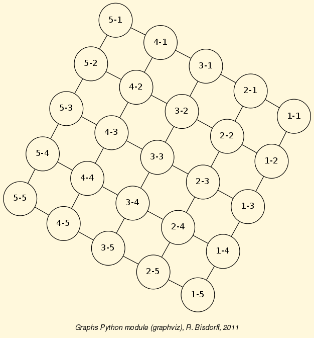
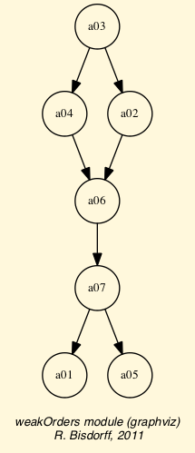

Technical Reference of the Digraph3 modules¶
| Author: | Raymond Bisdorff, University of Luxembourg FSTC/CSC |
|---|---|
| Version: | Revision: Python 3.4 |
| Copyright: |
|
Introduction¶
Dowloading the Digraph3 ressources
Two downlaod options are given:
1. Either (easiest under Linux or Mac OS-X), by using a subversion client:: ..$svn co http://leopold-loewenheim.uni.lu/svn/repos/Digraph3
2. Or, download and extract the latest distribution tar.gz archive:: http://leopold-loewenheim.uni.lu/svn/repos/Digraph3/dist/digraphs-Python3-xxx.tar.gz
Developping the Rubis decision support methodology is an ongoing research project of Raymond Bisdorff <http://charles-sanders-peirce.uni.lu/bisdorff/>, University of Luxembourg.
To be fully functional, the Digraph3 resources mainly need the graphviz tools and the R statistics resources to be installed. When exploring digraph isomorphisms, the nauty isomorphism testing program is required. two specific criteria and actions clustering methods of the Digraph class furthermore require the calmat matrix computing resource to be installed.
Organisation of the Digraph3 python3 source code
The Digraph3 source code is split into several interdependent modules of which the digraphs module is the master module.
- digraphs module
Main part of the Digraph3 source code with the root Digraph class;
- graphs module
Specialization for undirected graphs with the root Graph class and a brigde to the digraphs module resources;
- outrankingDigraphs module
New Python3 specific root OutrankingDigraph class and specializations;
- perfTabs module
Everything needed for handling Multiple Criteria Decision Aid performance tableaux with root PerformaceTableau class;
- votingDigraphs module
Additional classes and methods for computing election results with main LinearVotingProfile class;
- sortingDigraphs module
Additional tools for solving sorting problems with the root SortingDigraph class;
- linearOrders module
Additional tools for solving linearly ranking problems with the root LinearOrder class;
- weakOrders module
Additional tools for solving ranking by choosing problems with root WeakOrder class.
- randomNumbers module
Various home brewed random number generators like discrete and extended triangular.
- randomDigraphs module
Various implemented random digraph models.
digraphs module¶
A tutorial with coding examples is available here: Working with the digraphs module
- class digraphs.AsymmetricPartialDigraph(digraph)¶
Bases: digraphs.Digraph
Renders the asymmetric part of a Digraph instance
Note
The non asymmetric links are all put to the median indeterminate characteristic value!
- class digraphs.CSVDigraph(fileName='temp', valuationMin=-1, valuationMax=1)¶
Bases: digraphs.Digraph
Specialization of the general Digraph class for reading stored csv formatted digraphs. Using the inbuilt module csv.
- Param:
- fileName (without the extension .csv).
- showAll()¶
- class digraphs.CirculantDigraph(order=7, valuationdomain={'max': Decimal('1.0'), 'min': Decimal('-1.0')}, circulants=[-1, 1])¶
Bases: digraphs.Digraph
- Parameters:
- order > 0;valuationdomain ={‘min’:m, ‘max’:M};circulant connections = list of positive and/or negative circular shifts of value 1 to n.
Specialization of the general Digraph class for generating temporary circulant digraphs
- Default instantiation C_7:
- order = 7,valuationdomain = {‘min’:-1.0,’max’:1.0},circulants = [-1,1].
- showShort()¶
- class digraphs.CoDualDigraph(other, Debug=False)¶
Bases: digraphs.Digraph
Instantiates the associated codual digraph from a given Digraph called other.
Instantiates as other.__class__ !
Copies the case given the description, the criteria and the evaluation dictionary into self.
- class digraphs.CocaDigraph(digraph=None, Cpp=False, Piping=False, Comments=False)¶
Bases: digraphs.Digraph
- Parameters:
- Stored or memory resident digraph instance.
Specialization of general Digraph class for instantiation of chordless odd circuits augmented digraphs.
- addCircuits(Comments=False)¶
Augmenting self with self.circuits.
- closureChordlessOddCircuits(Cpp=False, Piping=False, Comments=False)¶
Closure of chordless odd circuits extraction.
- showCircuits()¶
show methods for chordless odd circuits in CocaGraph
- showComponents()¶
- class digraphs.CoceDigraph(digraph=None, Cpp=False, Piping=False, Comments=False, Debug=False)¶
Bases: digraphs.Digraph
- Parameters:
- Stored or memory resident digraph instance.
Specialization of general Digraph class for instantiation of chordless odd circuits eliminated digraphs.
- iterateCocElimination(Comments=True, Debug=False)¶
Eliminates all chordless odd circuits with rising valuation cut levels. Renders a tuple (level,polarisedDigraph) where level is the necessary bipolar cut level for eliminating all chordless odd circuits, and polarisedDigraph is the resulting digraph instance. Renders (None,None) if no chordless odd circuit is detected.
- class digraphs.CompleteDigraph(order=5, valuationdomain=(-1.0, 1.0))¶
Bases: digraphs.Digraph
- Parameters:
- order > 0; valuationdomain=(Min,Max).
Specialization of the general Digraph class for generating temporary complete graphs of order 5 in {-1,0,1} by default.
- class digraphs.ConverseDigraph(other)¶
Bases: digraphs.Digraph
Instantiates the associated converse orreciprocal version from a given Digraph called other.
Instantiates as other.__class__ !
Copies the case given the description, the criteria and the evaluation dictionary into self.
- class digraphs.CoverDigraph(other, Debug=False)¶
Bases: digraphs.Digraph
Instantiates the associated cover relation from a given Digraph called other.
Instantiates as other.__class__ !
Copies the case given the description, the criteria and the evaluation dictionary into self.
- class digraphs.Digraph(file=None, order=7)¶
Bases: builtins.object
General class of digraphs, R.B. March 2006:
- Python data file format:
- actionset = [‘1’,‘2’,‘3’,‘4’,‘5’]
- valuationdomain = { ‘min’:0, ‘med’:1, ‘max’: 2}
- relation = { ‘1’: { ‘1’:0, ‘2’: 2, ...}, ...}
- Example python3 (3.3+ recommended) session::
>>> from digraphs import Digraph >>> g = Digraph('tempdigraph') >>> g.showShort() *----- show short --------------* Digraph : tempdigraph Actions : ['1', '2', '3'] Valuation domain : {'med': Decimal("0.5"), 'max': Decimal("1.0"), 'min': Decimal("0")} *--- Connected Components ---* 1: ['1', '2', '3']
- MISgen(S, I)¶
- generator of maximal independent choices (voir Byskov 2004):
- S ::= remaining nodes;
- I ::= current independent choice
Note
Inititalize: self.MISgen(self.actionscopy(),set())
- absirred(choice)¶
Renders the crips -irredundance degree of a choice.
- absirredundant(U)¶
Generates all -irredundant choices of a digraph.
- absirredval(choice, relation)¶
Renders the valued -irredundance degree of a choice.
- absirredx(choice, x)¶
Computes the crips -irredundance degree of node x in a choice.
- abskernelrestrict(choice)¶
Parameter: prekernel Renders absorbent prekernel restricted relation.
- absorb(choice)¶
Renders the absorbency degree of a choice.
- absorbentChoices(S)¶
Generates all minimal absorbent choices of a bipolar valued digraph.
- agglomerationDistribution()¶
Output: aggloCoeffDistribution, meanCoeff Renders the distribution of agglomeration coefficients.
- aneighbors(node)¶
Renders the set of absorbed in-neighbors of a node.
- automorphismGenerators()¶
Add automorphism group generators to digraph.
- averageCoveringIndex(choice, direction='out')¶
Renders the average covering index of a given choice in a set of objects, ie the average number of choice members that cover each non selected object.
- bestRanks()¶
renders best possible ranks from indegrees account
- bipolarKCorrelation(digraph, Debug=False)¶
Renders the bipolar Kendall correlation between two bipolar valued digraphs computed from the average valuation of the XORDigraph(self,digraph) instance.
Warning
Obsolete! Is replaced by the self.computeBipolarCorrelation(other) Digraph method
- bipolarKDistance(digraph, Debug=False)¶
Renders the bipolar crisp Kendall distance between two bipolar valued digraphs.
Warning
Obsolete! Is replaced by the self.computeBipolarCorrelation(other, MedianCut=True) Digraph method
- chordlessPaths(Pk, n2, Odd=False, Comments=False, Debug=False)¶
New procedure from Agrum study April 2009 recursive chordless path extraction strating from path Pk = [n2, ...., n1] and ending in node n2. Optimized with marking of visited chordless P1s.
- circuitAverageCredibility(circuit)¶
Renders the average linking credibility of a COC.
- circuitMinCredibility(circuit)¶
Renders the minimal linking credibility of a COC.
- closeSymmetric()¶
Produces the symmetric closure of self.relation.
- closeTransitive(Irreflexive=True, Reverse=False)¶
Produces the transitive closure of self.relation.
- coSize()¶
Renders the number of non validated non reflexive arcs
- collectcomps(x, A, ncomp)¶
Recursive subroutine of the components method.
- components()¶
Renders the list of connected components.
- computeAllDensities(choice=None)¶
parameter: choice in self renders six densitiy parameters: arc density, double arc density, single arc density, strict single arc density, absence arc density, strict absence arc densitiy.
- computeArrowRaynaudRanking(Debug=False)¶
renders a ranking of the actions following Arrow&Raynaud’s rule.
- computeAverageValuation()¶
Computes the bipolar average correlation between self and the crisp complete digraph of same order of the irreflexive and determined arcs of the digraph
- computeBadChoices(Comments=False)¶
- Characteristic values for potentially bad choices.[(0)-determ,(1)degirred,(2)degi,(3)degd,(4)dega,(5)str(choice),(6)absvec]
- computeBadPirlotChoices(Comments=False)¶
Characteristic values for potentially bad choices using the Pirlot’s fixpoint algorithm.
- computeBipolarCorrelation(other, MedianCut=False, filterRelation=None, Debug=False)¶
Renders the bipolar correlation K of a self.relation when compared with a given compatible (same actions set)) digraph or a [-1,1] valued compatible relation (same actions set).
If MedianCut=True, the correlation is computed on the median polarized relations.
If filterRelation != None, the correlation is computed on the partial domain corresponding to the determined part of the filter relation.
Warning
Notice that the ‘other’ relation and/or the ‘filterRelation’, the case given, must both be normalized, ie [-1,1]-valued !
K = sum_{x != y} [ min( max(-self.relation[x][y]),other.relation[x][y]), max(self.relation[x][y],-other.relation[x][y]) ]
K /= sum_{x!=y} [ min(abs(self.relation[x][y]),abs(other.relation[x][y])) ]
Note
Renders a tuple with at position 0 the actual bipolar correlation index and in position 1 the minimal determination level D of self and the other relation.
D = sum_{x != y} min(abs(self.relation[x][y]),abs(other.relation[x][y])) / n(n-1)
where n is the number of actions considered.
The correlation index with a completely indeterminate relation is by convention 0.0 at determination level 0.0 .
- computeChordlessCircuits(Odd=False, Comments=False, Debug=False)¶
Renders the set of all chordless odd circuits detected in a digraph. Result (possible empty list) stored in <self.circuitsList> holding a possibly empty list tuples with at position 0 the list of adjacent actions of the circuit and at position 1 the set of actions in the stored circuit.
- computeConcentrationIndex(X, N)¶
Renders the Gini concentration index of the X serie. N contains the partial frequencies. Based on the triangle summation formula.
- computeConcentrationIndexTrapez(X, N)¶
Renders the Gini concentration index of the X serie. N contains the partial frequencies. Based on the triangles summation formula.
- computeCppChordlessCircuits(Odd=False, Debug=False)¶
python wrapper for the C++/Agrum based chordless circuits enumeration exchange arguments with external temporary files
- computeCppInOutPipingChordlessCircuits(Odd=False, Debug=False)¶
python wrapper for the C++/Agrum based chordless circuits enumeration exchange arguments with external temporary files
- computeCutLevelDensities(choice, level)¶
parameter: choice in self, robustness level renders three robust densitiy parameters: robust double arc density, robust single arc density, robust absence arc densitiy.
- computeDensities(choice)¶
parameter: choice in self renders the four densitiy parameters: arc density, double arc density, single arc density, absence arc density.
- computeDeterminateness()¶
Computes the Kendalll distance of self with the all median valued (indeterminate) digraph.
- computeGoodChoiceVector(ker, Comments=False)¶
- Characteristic values for potentially good choices.[(0)-determ,(1)degirred,(2)degi,(3)degd,(4)dega,(5)str(choice),(6)domvec]
- computeGoodChoices(Comments=False)¶
- Characteristic values for potentially good choices.[(0)-determ,(1)degirred,(2)degi,(3)degd,(4)dega,(5)str(choice),(6)domvec]
- computeGoodPirlotChoices(Comments=False)¶
Characteristic values for potentially good choices using the Pirlot fixpoint algorithm.
- computeKemenyIndex(otherRelation)¶
renders the Kemeny index of the self.relation compared with a given crisp valued relation of a compatible other digraph (same nodes or actions).
- computeKemenyOrder(isProbabilistic=False, orderLimit=7, seed=None, sampleSize=1000, Debug=False)¶
renders a ranking of the actions with minimal Kemeny index. Return a tuple: kemenyOrder, kemenyIndex
- computeKohlerRanking(Debug=False)¶
renders a ranking of the actions following Kohler’s rule.
- computeMeanInDegree()¶
Renders the mean indegree of self. !!! self.size must be set previously !!!
- computeMeanOutDegree()¶
Renders the mean degree of self. !!! self.size must be set previously !!!
- computeMeanSymDegree()¶
Renders the mean degree of self. !!! self.size must be set previously !!!
- computeMedianOutDegree()¶
Renders the median outdegree of self. !!! self.size must be set previously !!!
- computeMedianSymDegree()¶
Renders the median symmetric degree of self. !!! self.size must be set previously !!!
Renders a list of more or less unrelated pairs.
- computeODistance(op2, comments=False)¶
renders the squared normalized distance of two digraph valuations. Parameters: op2 digraphs of same order as self. The digraphs must be of same order.
- computeOrbit(choice, withListing=False)¶
renders the set of isomorph copies of a choice following the automorphism of the digraph self
- computeOrdinalCorrelation(other, MedianCut=False, filterRelation=None, Debug=False)¶
obsolete: dummy replacement for Digraph.computeBipolarCorrelation method
- computePairwiseClusterComparison(K1, K2, Debug=False)¶
compute the pairwise cluster comparison credibility vector from bipolar-valued digraph g. with K1 and K2 disjoint lists of action keys from g actions disctionary. Returns the dictionary {‘I’: Decimal(),’P+’:Decimal(),’P-‘:Decimal(),’R’ :Decimal()} where one and only one item is strictly positive.
- computePreKernels()¶
- computing dominant and absorbent preKernels:
- Result in self.dompreKernels and self.abspreKernels
- computePreorderRelation(preorder, Normalized=True, Debug=False)¶
Renders the bipolar-valued relation obtained from a given preordering (list of lists) result.
- computePrincipalOrder(plotFileName=None, Colwise=False, imageType=None, Comments=False, Debug=False)¶
renders a ordered list of self.actions using the decreasing scores from the first rincipal eigenvector of the covariance of the valued outdegrees of self.
Warning
The method, relying on writing and reading temporary files in the current working directory, is hence not threading and multiprocessing safe ! (see Digraph.exportPrincipalImage method)
- computePrudentBestChoiceRecommendation(CoDual=False, Comments=False, Debug=False, Limited=None)¶
Renders the best choice recommendation after eliminating all odd chordless circuits with a minimal cut of the valuation.
- computePrudentBetaLevel(Debug=False)¶
computes alpha, ie the lowest valuation level, for which the bipolarly polarised digraph doesn’t contain a chordless circuit.
- computeRankedPairsOrder(Cpp=False, Debug=False)¶
renders a ranking of the actions obtained from the ranked pairs rule.
- computeRankingByBestChoosing(CoDual=False, CppAgrum=False, Debug=False)¶
Computes a weak preordering of the self.actions by recursive best choice elagations.
Stores in self.rankingByBestChoosing[‘result’] a list of (P+,bestChoice) tuples where P+ gives the best choice complement outranking average valuation via the computePairwiseClusterComparison method.
If self.rankingByBestChoosing[‘CoDual’] is True, the ranking-by-choosing was computed on the codual of self.
- computeRankingByBestChoosingRelation(rankingByBestChoosing=None, Debug=False)¶
Renders the bipolar-valued relation obtained from the self.rankingByBestChoosing result.
- computeRankingByChoosing(actionsSubset=None, CppAgrum=False, Debug=False, CoDual=False)¶
Computes a weak preordring of the self.actions by iterating jointly best and worst choice elagations.
Stores in self.rankingByChoosing[‘result’] a list of ((P+,bestChoice),(P-,worstChoice)) pairs where P+ (resp. P-) gives the best (resp. worst) choice complement outranking (resp. outranked) average valuation via the computePairwiseClusterComparison method.
If self.rankingByChoosing[‘CoDual’] is True, the ranking-by-choosing was computed on the codual of self.
- computeRankingByChoosingRelation(rankingByChoosing=None, actionsSubset=None, Debug=False)¶
Renders the bipolar-valued relation obtained from the self.rankingByChoosing result.
- computeRankingByLastChoosing(CoDual=False, CppAgrum=False, Debug=False)¶
Computes a weak preordring of the self.actions by iterating worst choice elagations.
Stores in self.rankingByLastChoosing[‘result’] a list of (P-,worstChoice) pairs where P- gives the worst choice complement outranked average valuation via the computePairwiseClusterComparison method.
If self.rankingByChoosing[‘CoDual’] is True, the ranking-by-last-chossing was computed on the codual of self.
- computeRankingByLastChoosingRelation(rankingByLastChoosing=None, Debug=False)¶
Renders the bipolar-valued relation obtained from the self.rankingByLastChoosing result.
- computeRelationalStructure(Debug=False)¶
Renders the counted decomposition of the valued relations into the following type of links: gt ‘>’, eq ‘=’, lt ‘<’, incomp ‘<>’, leq ‘<=’, geq ‘>=’, indeterm ‘?’
- computeRubisChoice(CppAgrum=False, Comments=False)¶
Renders self.strictGoodChoices, self.nullChoices self.strictBadChoices, self.nonRobustChoices.
CppgArum = False (default | true : use C++/Agrum digraph library for computing chordless circuits in self.
- computeRubyChoice(CppAgrum=False, Comments=False)¶
dummy for computeRubisChoice() old versions compatibility.
- computeSingletonRanking(Comments=False, Debug=False)¶
Renders the sorted bipolar net determinatation of outrankingness minus outrankedness credibilities of all singleton choices. res = ((netdet,singleton,dom,absorb)+)
- computeSizeTransitiveClosure()¶
Renders the size of the transitive closure of a digraph.
- computeSlaterOrder(isProbabilistic=False, seed=None, sampleSize=1000, Debug=False)¶
renders a ranking of the actions with minimal Slater index. Return a tuple: slaterOrder, slaterIndex
- computeTransitivityDegree()¶
Renders the transitivity degree of a digraph.
Renders a list of more or less unrelated pairs.
- computeValuationLevels(choice=None, Debug=False)¶
renders the symmetric closure of the apparent valuations levels of self in an increasingly ordered list. If parameter choice is given, the computation is limited to the actions of the choice.
- computeValuationPercentages(choice, percentiles, withValues=False)¶
Parameters: choice and list of percentages. renders a series of quantiles of the characteristics valuation of the arcs in the digraph.
- computeValuationPercentiles(choice, percentages, withValues=False)¶
Parameters: choice and list of percentages. renders a series of quantiles of the characteristics valuation of the arcs in the digraph.
- computeValuationStatistics(Sampling=False, Comments=False)¶
Renders the mean and variance of the valuation of the non reflexive pairs.
- computeupdown1(s, S)¶
Help method for show_MIS_HB2 method. fills self.newmisset, self.upmis, self.downmis.
- computeupdown2(s, S)¶
Help method for show_MIS_HB1 method. fills self.newmisset, self.upmis, self.downmis.
- computeupdown2irred(s, S)¶
Help method for show_MIS_HB1 method. fills self.newmisset, self.upmis, self.downmis.
- condorcetWinners()¶
Renders the set of decision actions x such that self.relation[x][y] > self.valuationdomain[‘med’] for all y != x.
- contra(v)¶
Parameter: choice. Renders the negation of a choice v characteristic’s vector.
- convertRelationToDecimal()¶
Converts the float valued self.relation in a decimal valued one.
- convertValuationToDecimal()¶
Convert the float valuation limits to Decimals.
- coveringIndex(choice, direction='out')¶
Renders the covering index of a given choice in a set of objects, ie the minimum number of choice members that cover each non selected object.
- crispKDistance(digraph, Debug=False)¶
Renders the crisp Kendall distance between two bipolar valued digraphs.
Warning
Obsolete! Is replaced by the self.computeBipolarCorrelation(other, MedianCut=True) Digraph method
- detectChordlessCircuits(Comments=False, Debug=False)¶
Detects a chordless circuit in a digraph. Returns a Boolean
- detectChordlessPath(Pk, n2, Comments=False, Debug=False)¶
New procedure from Agrum study April 2009 recursive chordless path extraction strating from path Pk = [n2, ...., n1] and ending in node n2. Optimized with marking of visited chordless P1s.
- detectCppChordlessCircuits(Debug=False)¶
python wrapper for the C++/Agrum based chordless circuits detection exchange arguments with external temporary files. Returns a boolean value
- determinateness(vec, inPercent=True)¶
Renders the determinateness of a bipolar characteristic vector
- diameter(Oriented=False)¶
Renders the (by default non-oriented) diameter of the digraph instance
- digraph2Graph(valuationDomain={'max': 1, 'min': -1, 'med': 0}, Debug=False, conjunctiveConversion=True)¶
Convert a Digraph instance to a Graph instance.
- dneighbors(node)¶
Renders the set of dominated out-neighbors of a node.
- domin(choice)¶
Renders the dominance degree of a choice.
- dominantChoices(S)¶
Generates all minimal dominant choices of a bipolar valued digraph.
Note
Initiate with S = self.actions,copy().
- domirred(choice)¶
Renders the crips +irredundance degree of a choice.
- domirredval(choice, relation)¶
Renders the valued +irredundance degree of a choice.
- domirredx(choice, x)¶
Renders the crips +irredundance degree of node x in a choice.
- domkernelrestrict(choice)¶
Parameter: prekernel Renders dominant prekernel restricted relation.
- exportD3(fileName='index', Comments=True)¶
This function was designed and implemented by Gary Cornelius, 2014 for his bachelor thesis at the University of Luxembourg. The thesis document with more explanations can be found here .
- Parameters:
- fileName, name of the generated html file, default = None (graph name as defined in python);
- Comments, True = default;
The idea of the project was to find a way that allows you to easily get details about certain nodes or edges of a directed graph in a dynamic format. Therefore this function allows you to export a html file together with all the needed libraries, including the D3 Library which we use for graph generation and the physics between nodes, which attracts or pushes nodes away from each other.
- Features of our graph include i.e. :
- A way to only inspect a node and it’s neighbours
- Dynamic draging and freezing of the graph
- Export of a newly created general graph
You can find the list of fututres in the Section below which is arranged according to the graph type.
- If the graph is an outrankingdigraphs:
- Nodes can be dragged and only the name and comment can be edited.
- Edges can be inspected but not edited for this purpose a special json array containing all possible pairwiseComparisions is generated.
- If the graph is a general graph:
- Nodes can be dragged, added, removed and edited.
- Edges can be added, removed, inverted and edited. But edges cannot be inspected.
- The pairwiseComparisions key leads to an empty array {}.
In both cases, undefined edges can be hidden and reappear after a simple reload.(right click - reload)
- The generated files:
- d3.v3.js, contains the D3 Data-driven Documents source code, containing one small addition that we made in order to be able to easyly import links with a different formatself.
- digraph3lib.js, contains our library. This file contains everything that we need from import of an XMCDA2 file, visualization of the graph to export of the changed graph.
- d3export.json, usually named after the python graph name followed by a ticket number if the file is already present. It is the JSON file that is exported with the format “{“xmcda2”: “some xml”,”pairwiseComparisions”:”{“a01”: “some html”,...}”}.
- Example 1:
- python3 session:
>>> from digraphs import RandomValuationDigraph >>> dg = RandomValuationDigraph(order=5,Normalized=True) >>> dg.exportD3() or >> dg.showInteractiveGraph()
- index.html:
- Main Screen:

- Inspect function:

Note
If you want to use the automatic load in Chrome, try using the command: “python -m SimpleHTTPServer” and then access the index.html via “http://0.0.0.0:8000/index.html”. In order to load the CSS an active internet connection is needed!
- exportGraphViz(fileName=None, bestChoice=set(), worstChoice=set(), noSilent=True, graphType='png', graphSize='7, 7', relation=None)¶
export GraphViz dot file for graph drawing filtering.
- exportPrincipalImage(Reduced=False, Colwise=False, plotFileName=None, Type='png', Comments=False)¶
Export as PNG (default) or PDF the principal projection of the valued relation using the three principal eigen vectors.
Warning
The method, writing and reading temporary files: tempCol.r and rotationCol.csv, resp. tempRow.r and rotationRow.csv, is hence not safe for multiprocessors’ threading programs.
- flatChoice(ch, Debug=False)¶
Converts set or list ch recursively to a flat list of items.
- forcedBestSingleChoice()¶
Renders the set of most determined outranking singletons in self.
- gammaSets()¶
Renders the dictionary of neighborhoods {node: (dx,ax)}
- generateAbsPreKernels()¶
Generate all absorbent prekernels from independent choices generator.
- generateDomPreKernels()¶
Generate all dominant prekernels from independent choices generator.
- graphDetermination()¶
Output: average arc determination
- htmlRelationTable(tableTitle='Valued Relation Table', relationName='r(x R y)', hasIntegerValues=False, actionsSubset=None, isColored=False)¶
renders the relation valuation in actions X actions html table format.
- inDegrees()¶
renders the median cut indegrees
- inDegreesDistribution()¶
Renders the distribution of indegrees.
- independentChoices(U)¶
Generator for all independent choices with neighborhoods of a bipolar valued digraph:
Note
- Initiate with U = self.singletons().
- Yields [(independent choice, domnb, absnb, indnb)].
- inner_prod(v1, v2)¶
Parameters: two choice characteristic vectors Renders the inner product of two characteristic vetors.
- intstab(choice)¶
Computes the independence degree of a choice.
- irreflex(mat)¶
puts diagonal entries of mat to valuationdomain[‘min’]
- isComplete(Debug=False)¶
checks the completeness property of self.relation by checking for the absence of a link between two actions!!
Warning
The reflexive links are ignored !!
- isCyclic(Debug=False)¶
checks the cyclicity of self.relation by checking for a reflexive loop in its transitive closure !! self.relation is supposed to be irreflexive !!
- isWeaklyComplete(Debug=False)¶
checks the weakly completeness property of self.relation by checking for the absence of a link between two actions!!
Warning
The reflexive links are ignored !!
- iterateRankingByChoosing(Odd=False, CoDual=False, Comments=True, Debug=False, Limited=None)¶
Renders a ranking by choosing result when progressively eliminating all chordless (odd only) circuits with rising valuation cut levels.
- Parameters
- CoDual = False (default)/True Limited = proportion (in [0,1]) * (max - med) valuationdomain
- kChoices(A, k)¶
Renders all choices of length k from set A
- matmult2(m, v)¶
Parameters: digraph relation and choice characteristic vector matrix multiply vector by inner production
- meanDegree()¶
Renders the mean degree of self. !!! self.size must be set previously !!!
- meanLength(Oriented=False)¶
Renders the (by default non-oriented) mean neighbourhoor depth of self. !!! self.order must be set previously !!!
- minimalChoices(S)¶
Generates all dominant or absorbent choices of a bipolar valued digraph.
- minimalValuationLevelForCircuitsElimination(Odd=True, Debug=False, Comments=False)¶
renders the minimal valuation level <lambda> that eliminates all self.circuitsList stored odd chordless circuits from self.
Warning
The <lambda> level polarised may still contain newly appearing chordless odd circuits !
- neighbourhoodCollection(Oriented=False, Potential=False)¶
Renders the neighbourhood.
- neighbourhoodDepthDistribution(Oriented=False)¶
Renders the distribtion of neighbourhood depths.
- notGammaSets()¶
Renders the dictionary of not neighborhoods {node: (dx,ax)}
- notaneighbors(node)¶
Renders the set of absorbed not in-neighbors of a node.
- notdneighbors(node)¶
Renders the set of not dominated out-neighbors of a node.
- omax(L, Debug=False)¶
epistemic disjunction for bipolar outranking characteristics computation
- omin(L, Debug=False)¶
epistemic conjunction for bipolar outranking characteristics computation
- optimalRankingByChoosing(Odd=True, CoDual=False, Comments=False, Debug=False, Limited=None)¶
Renders a ranking by choosing result when progressively eliminating all chordless (odd only by default) circuits with rising valuation cut levels.
Parameters:
- CoDual = False (default)/True
- Limited = proportion (in [0,1]) * (max - med) of valuationdomain (default = None)
Returns the highest correlated rankingByChoosing with self or codual of self, depending on the CoDual flagg.
- outDegrees()¶
renders the median cut outdegrees
- outDegreesDistribution()¶
Renders the distribution of outdegrees.
- plusirredundant(U)¶
Generates all +irredundant choices of a digraph.
- powerset(U)¶
Generates all subsets of a set.
- readPerrinMisset(file)¶
read method for 0-1-char-coded MISs from perrinMIS.c curd.dat file.
- readPerrinMissetOpt(file)¶
read method for 0-1-char-coded MISs from perrinMIS.c curd.dat file.
- readabsvector(x, relation)¶
Parameter: action x absorbent in vector.
- readdomvector(x, relation)¶
Parameter: action x dominant out vector.
- recodeValuation(newMin=-1.0, newMax=1.0, Debug=False)¶
Recodes the characteristic valuation domain according to the parameters given.
Note
Default values gives a normalized valuation domain
- save(fileName='tempdigraph', option=None, DecimalValuation=True)¶
Persistent storage of a Digraph class instance in the form of a python source code file
- saveCSV(fileName='tempdigraph', Normalized=True, Dual=True, Converse=False, Diagonal=False, Debug=False)¶
Persistent storage of a Digraph class instance in the form of a csv file.
- saveXMCDA(fileName='temp', relationName='R', category='random', subcategory='valued', author='digraphs Module (RB)', reference='saved from Python', valuationType='standard', servingD3=False)¶
save digraph in XMCDA format.
- saveXMCDA2(fileName='temp', fileExt='xmcda2', Comments=True, relationName='R', relationType='binary', category='random', subcategory='valued', author='digraphs Module (RB)', reference='saved from Python', valuationType='standard', digits=2, servingD3=False)¶
save digraph in XMCDA format.
- saveXML(name='temp', category='general', subcategory='general', author='digraphs Module (RB)', reference='saved from Python')¶
save digraph in XML format.
- savedre(name='temp')¶
save digraph in nauty format.
- sharp(x, y)¶
Paramaters: choice characteristic values. Renders the sharpest of two characteristic values x and y.
- sharpvec(v, w)¶
Paramaters: choice characteristic vectors. Renders the sharpest of two characteristic vectors v and w.
- showActions()¶
presentation methods for digraphs actions
- showAll()¶
- showAutomorphismGenerators()¶
Renders the generators of the automorphism group.
- showBadChoices(Recompute=True)¶
Characteristic values for potentially bad choices.
- showChoiceVector(ch)¶
show procedure for annotated bipolar choices
- showChordlessCircuits()¶
show methods for (chordless) circuits in a Digraph. Dummy for showCircuits().
- showCircuits()¶
show methods for circuits observed in a Digraph instance.
- showComponents()¶
- showGoodChoices(Recompute=True)¶
Characteristic values for potentially good choices.
- showHTMLRelationTable(actionsList=None, IntegerValues=False, Colored=True, tableTitle='Valued Adjacency Matrix', relationName='r(x S y)')¶
Launches a browser window with the colored relation table of self.
- showInteractiveGraph()¶
Save the graph and all needed files for the visualization of an interactive graph generated by the exportD3() function. For best experience make sure to use Firefox, because other browser restrict the loading of local files.
- showMIS(withListing=True)¶
- Prints all maximal independent choices:
- Result in self.misset.
- showMIS_AH(withListing=True)¶
Prints all MIS using the Hertz method. Result saved in self.hertzmisset.
- showMIS_HB2(withListing=True)¶
Prints all MIS using the Hertz-Bisdorff method. Result saved in self.newmisset.
- showMIS_RB(withListing=True)¶
Prints all MIS using the Bisdorff method. Result saved in self.newmisset.
- showMIS_UD(withListing=True)¶
Prints all MIS using the Hertz-Bisdorff method. Result saved in self.newmisset.
- showMaxAbsIrred(withListing=True)¶
- Computing maximal -irredundant choices:
- Result in self.absirset.
- showMaxDomIrred(withListing=True)¶
- Computing maximal +irredundant choices:
- Result in self.domirset.
- showMinAbs(withListing=True)¶
- Prints minimal absorbent choices:
- Result in self.absset.
- showMinDom(withListing=True)¶
- Prints all minimal dominant choices:
- Result in self.domset.
- showNeighborhoods()¶
Lists the gamma and the notGamma function of self.
- showOrbits(InChoices, withListing=True)¶
Prints the orbits of Choices along the automorphisms of the digraph self.
- showOrbitsFromFile(InFile, withListing=True)¶
Prints the orbits of Choices along the automorphisms of the digraph self by reading in the 0-1 misset file format.
- showPreKernels(withListing=True)¶
- Printing dominant and absorbent preKernels:
- Result in self.dompreKernels and self.abspreKernels
- showRankingByBestChoosing(rankingByBestChoosing=None)¶
A show method for self.rankinByBestChoosing result.
Warning
The self.computeRankingByBestChoosing(CoDual=False/True) method instantiating the self.rankingByBestChoosing slot is pre-required !
- showRankingByChoosing(rankingByChoosing=None)¶
A show method for self.rankinByChoosing result.
Warning
The self.computeRankingByChoosing(CoDual=False/True) method instantiating the self.rankingByChoosing slot is pre-required !
- showRankingByLastChoosing(rankingByLastChoosing=None, Debug=None)¶
A show method for self.rankinByChoosing result.
Warning
The self.computeRankingByLastChoosing(CoDual=False/True) method instantiating the self.rankingByChoosing slot is pre-required !
- showRelation()¶
prints the relation valuation in ##.## format.
- showRelationTable(Sorted=True, IntegerValues=False, actionsSubset=None, relation=None, ndigits=2, ReflexiveTerms=True)¶
prints the relation valuation in actions X actions table format.
- showRubisBestChoiceRecommendation(Comments=False, Debug=False)¶
Renders the RuBis best choice recommendation.
- showRubyChoice(Comments=False)¶
dummy for showRubisChoice() older versions compatibility
- showShort()¶
concise presentation method for genuine digraphs.
- showSingletonRanking(Comments=True, Debug=False)¶
Calls self.computeSingletonRanking(comments=True,Debug = False). Renders and prints the sorted bipolar net determinatation of outrankingness minus outrankedness credibilities of all singleton choices. res = ((netdet,sigleton,dom,absorb)+)
- showStatistics()¶
Computes digraph statistics like order, size and arc-density.
- showdre()¶
Shows relation in nauty format.
- singletons()¶
list of singletons and neighborhoods [(singx1, +nx1, -nx1, not(+nx1 or -nx1)),.... ]
- size()¶
Renders the number of validated non reflexive arcs
- sizeSubGraph(choice)¶
Output: (size, undeterm,arcDensity). Renders the arc density of the induced subgraph.
- strongComponents(setPotential=False)¶
Renders the set of strong components of self.
- symDegreesDistribution()¶
Renders the distribution of symmetric degrees.
- topologicalSort(Debug=False)¶
If self is acyclic, adds topological sort number to each node of self and renders ordered list of nodes. Otherwise renders None. Source: M. Golumbic Algorithmic Graph heory and Perfect Graphs, Annals Of Discrete Mathematics 57 2nd Ed. , Elsevier 2004, Algorithm 2.4 p.44.
- weakAneighbors(node)¶
Renders the set of absorbed in-neighbors of a node.
- weakCondorcetWinners()¶
Renders the set of decision actions x such that self.relation[x][y] >= self.valuationdomain[‘med’] for all y != x.
- weakDneighbors(node)¶
Renders the set of dominated out-neighbors of a node.
- weakGammaSets()¶
Renders the dictionary of neighborhoods {node: (dx,ax)}
- worstRanks()¶
renders worst possible ranks from outdegrees account
- zoomValuation(zoomFactor=1.0)¶
Zooms in or out, depending on the value of the zoomFactor provided, the bipolar valuation of a digraph.
- class digraphs.DualDigraph(other)¶
Bases: digraphs.Digraph
Instantiates the dual Digraph object of a given other Digraph instance.
- The relation constructor returns the dual of self.relation with formula:
- relationOut[a][b] = Max - self.relation[a][b] + Min where Max (resp. Min) equals valuation maximum (resp. minimum).
- class digraphs.EmptyDigraph(order=5, valuationdomain=(-1.0, 1.0))¶
Bases: digraphs.Digraph
- Parameters:
- order > 0 (default=5); valuationdomain =(Min,Max).
Specialization of the general Digraph class for generating temporary empty graphs of given order in {-1,0,1}.
- class digraphs.EquivalenceDigraph(d1, d2, Debug=False)¶
Bases: digraphs.Digraph
Instantiates the logical equivalence digraph of two bipolar digraphs d1 and d2 of same order. Returns None if d1 and d2 are of different order
- computeCorrelation()¶
Renders the global bipolar correlation index resulting from the pairwise equivalence valuations.
- class digraphs.FusionDigraph(dg1, dg2, operator='o-min')¶
Bases: digraphs.Digraph
Instantiates the epistemic fusion of two given Digraph called dg1 and dg2.
Parameter:
- operator = “o-min” | “o-max” (epistemic conjunctive or dijunctive fusion)
- class digraphs.GridDigraph(n=5, m=5, valuationdomain={'max': 1.0, 'min': -1.0}, hasRandomOrientation=False, hasMedianSplitOrientation=False)¶
Bases: digraphs.Digraph
- Parameters:
- n,m > 0; valuationdomain ={‘min’:m, ‘max’:M}.
Specialization of the general Digraph class for generating temporary Grid digraphs of dimension n times m.
- Default instantiation (5 times 5 Grid Digraph):
- n = 5, m=5, valuationdomain = {‘min’:-1.0,’max’:1.0}.
Randomly orientable with hasRandomOrientation=True (default=False).
- showShort()¶
- class digraphs.IndeterminateDigraph(other=None, order=5, valuationdomain=(-1.0, 1.0))¶
Bases: digraphs.Digraph
Parameters: order > 0; valuationdomain =(Min,Max). Specialization of the general Digraph class for generating temporary empty graphs of order 5 in {-1,0,1}.
- class digraphs.KneserDigraph(n=5, j=2, valuationdomain={'max': 1.0, 'min': -1.0})¶
Bases: digraphs.Digraph
- Parameters:
- n > 0; n > j > 0;valuationdomain ={‘min’:m, ‘max’:M}.
Specialization of the general Digraph class for generating temporary Kneser digraphs
- Default instantiation as Petersen graph:
- n = 5, j = 2, valuationdomain = {‘min’:-1.0,’max’:1.0}.
- showShort()¶
- class digraphs.PolarisedDigraph(digraph=None, level=None, KeepValues=True, AlphaCut=False, StrictCut=False)¶
Bases: digraphs.Digraph
Renders the polarised valuation of a Digraph class instance:
- Parameters:
- If level = None, a default 75% cut level (0.5 in a normalized valuation domain) is used.
- If KeepValues = False, the polarisation results in a three valued crisp result.
- If AlphaCut = True a genuine one-sided True-oriented cut is operated.
- If StrictCut = True, the cut level value is excluded resulting in an open polarised valuation domain. By default the polarised valuation domain is closed and the complementary indeterminate domain is open.
- class digraphs.Preorder(other, direction='best')¶
Bases: digraphs.Digraph
Instantiates the associated preorder from a given Digraph called other.
Instantiates as other.__class__ !
Copies the case given the description, the criteria and the evaluation dictionary into self.
- class digraphs.RandomDigraph(order=9, arcProbability=0.5, hasIntegerValuation=True, Bipolar=False)¶
Bases: digraphs.Digraph
Specialization of the general Digraph class for generating temporary crisp (irreflexive) random digraphs.
- Parameters:
- order (default = 10);
- arc_probability (in [0.,1.], default=0.5)
Warning
Obsolete version. Will be removed in the future. Instead, use the new randomDigraphs.RandomDigraph constructor.
- class digraphs.RandomFixedDegreeSequenceDigraph(order=7, degreeSequence=[3, 3, 2, 2, 1, 1, 0])¶
Bases: digraphs.Digraph
Specialization of the general Digraph class for generating temporary random crisp graphs (symmetric digraphs) with a fixed sequence of degrees.
- Parameters:
- order=n and degreeSequence=[degree_1, ... ,degree_n]>
Note
The implementation is not guaranteeing a uniform choice among all potential valid graph instances.
Warning
Obsolete version. Will be removed in the future. Instead, use the new randomDigraphs.RandomFixedDegreeSequenceDigraph constructor.
- class digraphs.RandomFixedSizeDigraph(order=7, size=14)¶
Bases: digraphs.Digraph
Generates a random crisp digraph with a fixed size, by instantiating a fixed numbers of arcs from random choices in the set of potential oriented pairs of nodes numbered from 1 to order.
Warning
Obsolete version. Will be removed in the future. Instead, use the new randomDigraphs.RandomFixedSizeDigraph constructor.
- class digraphs.RandomRegularDigraph(order=7, degree=2)¶
Bases: digraphs.Digraph
- Parameters:
- order and degree.
Specialization of Digraph class for random regular symmetric instances.
Warning
Obsolete version. Will be removed in the future. Instead, use the new randomDigraphs.RandomRegularDigraph constructor.
- class digraphs.RandomTournament(order=10, ndigits=2, isCrisp=True, valuationDomain=None)¶
Bases: digraphs.Digraph
- Parameter:
- order = n > 0
Specialization of the general Digraph class for generating temporary weak tournaments
Warning
Obsolete version. Will be removed in the future. Instead, use the new randomDigraphs.RandomTournament constructor.
- class digraphs.RandomTree(numberOfNodes=5, ndigits=2, hasIntegerValuation=True)¶
Bases: digraphs.Digraph
Random generator for trees, using random Pruefer codes
- Parameter:
- numerOfNodes
Warning
Obsolete version. Will be removed in the future. Instead, use the new randomDigraphs.RandomTree constructor.
- prufer_to_tree(a)¶
- class digraphs.RandomValuationDigraph(order=9, ndigits=2, Normalized=False, hasIntegerValuation=False)¶
Bases: digraphs.Digraph
Specialization of the general Digraph class for generating temporary uniformly valuated random digraphs.
- Parameters:
- order > 0, number of arcs;
- ndigits > 0, number of digits if hasIntegerValuation = True; Otherwise, decimal precision.
- Normalized = True (r in [-1,1], r in [0,1] if False/default);
- hasIntegerValuation = False (default).
Warning
Obsolete version. Will be removed in the future. Instead, use the new randomDigraphs.RandomValuationDigraph constructor.
- class digraphs.RandomWeakTournament(order=10, ndigits=2, hasIntegerValuation=False, weaknessDegree=0.25, Comments=False)¶
Bases: digraphs.Digraph
- Parameter:
- order = n > 0
Specialization of the general Digraph class for generating temporary bipolar-valued weak tournaments
Warning
Obsolete version. Will be removed in the future. Instead, use the new randomDigraphs.RandomWeakTournament constructor.
- class digraphs.StrongComponentsCollapsedDigraph(digraph=None)¶
Bases: digraphs.Digraph
Reduction of Digraph object to its strong components.
- showComponents()¶
- class digraphs.SymmetricPartialDigraph(digraph)¶
Bases: digraphs.Digraph
Renders the symmetric part of a Digraph instance.
Note
The not symmetric links are all put to the meadian characteristics value!.
- class digraphs.WeakCocaDigraph(digraph=None, comment=None)¶
Bases: digraphs.Digraph
- Parameters:
- Stored or memory resident digraph instance.
Specialization of general Digraph class for instantiation of weak chordless odd circuits augmented digraphs.
- addWeakCircuits(comment=None)¶
Augmenting self with self.weakCircuits.
- closureWeakChordlessOddCircuits(comment=None)¶
Closure of cdordless odd circuits extraction.
- showCircuits()¶
show methods for chordless odd circuits in CocaGraph
- class digraphs.XMCDA2Digraph(fileName='temp')¶
Bases: digraphs.Digraph
Specialization of the general Digraph class for reading stored XMCDA-2.0 formatted digraphs. Using the inbuilt module xml.etree (for Python 2.5+).
- Param:
- fileName (without the extension .xmcda).
- showAll()¶
- class digraphs.XMCDADigraph(fileName='temp')¶
Bases: digraphs.Digraph
Specialization of the general Digraph class for reading stored XMCDA formatted digraphs. Using the inbuilt module xml.etree (for Python 2.5+).
- Param:
- fileName (without the extension .xmcda).
- showAll()¶
- class digraphs.XMLDigraph(fileName='testsaveXML')¶
Bases: digraphs.Digraph
Specialization of the general Digraph class for reading stored XML formatted digraphs. Using the inbuilt module xml.etree (for Python 2.5+).
- Param:
- fileName (without the extension .xml).
- class digraphs.XMLDigraph24(fileName='testsaveXML')¶
Bases: digraphs.Digraph
Specialization of the general Digraph class for reading stored XML formatted digraphs.
- showAll()¶
- class digraphs.XORDigraph(d1, d2, Debug=False)¶
Bases: digraphs.Digraph
Instantiates the XOR digraph of two bipolar digraphs d1 and d2 of same order.
- digraphs.all_perms(str)¶
- digraphs.flatten(iterable, ltypes=<class 'collections.abc.Iterable'>)¶
Flattens a list of lists into a flat list.
Main usage:
>>> listOfLists = [[1,2],[3],[4]] >>> [x for x in flatten(listOfLists)] [1,2,3,4]
- class digraphs.kChoicesDigraph(digraph=None, k=3)¶
Bases: digraphs.Digraph
- Parameters:
- digraph := Stored or memory resident digraph instancek := cardinality of the choices
Specialization of general Digraph class for instantiation of chordless odd circuits augmented digraphs.
- digraphs.powerset(S)¶
Power set generator iterator.
Parameter S may be any object that is accepted as input by the set class constructor.
Back to the Introduction
graphs module¶
A tutorial with coding examples is available here: Working with the graphs module
- class graphs.CompleteGraph(order=5, seed=None)¶
Bases: graphs.Graph
Instances of complete graphs bipolarly valuated in {-1,0,+1}. Each vertex x is positively linked to all the other vertices (edges[{x,y}] = +1)
- Parameter:
- order (positive integer)
- class graphs.CycleGraph(order=5, seed=None, Debug=False)¶
Bases: graphs.Graph
Instances of cycle graph characterized in [-1,1].
- Parameter:
- order (positive integer)
- class graphs.EmptyGraph(order=5, seed=None)¶
Bases: graphs.Graph
Empty instances of the Graph class characterized in [-1,1].
- Parameter:
- order (positive integer)
- class graphs.Graph(fileName=None, Empty=False, numberOfVertices=7, edgeProbability=0.5)¶
Bases: builtins.object
In the graphs module, the root graphs.Graph class provides a generic graph model. A given object consists in:
- a vertices dictionary
- a characteristic valuation domain, [-1,+1] by default
- an edges dictionary, characterising each edge in the given valuation domain
- a gamma function dictionary, holding the neighborhood vertices of each vertex
General structure:
vertices = {'v1': {'name': ...,'shortName': ...}, 'v2': {'name': ...,'shortName': ...}, 'v3': {'name': ...,'shortName': ...}, ... } valuationDomain = {'min': -1, 'med': 0, 'max': 1} edges = {frozenset({'v1','v2'}): 1, frozenset({'v1','v3'}): 1, frozenset({'v2','v3'}): -1, ...} ## links from each vertex to its neighbors gamma = {'v1': {'v2',v3'}, 'v2': {'v1'}, 'v3': {'v1'}, ... }- Example python3 session:
>>> from graphs import Graph >>> g = Graph(numberOfVertices=5,edgeProbability=0.5) >>> g.showShort() *----- show short --------------* *---- short description of the graph ----* Name : 'random' Vertices : ['v1', 'v2', 'v3', 'v4', 'v5'] Valuation domain : {'med': 0, 'max': 1, 'min': -1} Gamma function : v1 -> ['v4'] v2 -> [] v3 -> ['v4'] v4 -> ['v1', 'v3'] v5 -> []
- computeChordlessCycles(Comments=True, Debug=False)¶
Renders the set of all chordless cycles observed in a Graph intance.
- computeSize()¶
Renders the number of edges of this graph instance (result is stored in self.size).
- depthFirstSearch(Debug=False)¶
Depth first search through a graph
- exportGraphViz(fileName=None, noSilent=True, graphType='png', graphSize='7, 7')¶
Exports GraphViz dot file for graph drawing filtering.
- Example:
>>> g = Graph(numberOfVertices=5,edgeProbability=0.3) >>> g.exportGraphViz('randomGraph'))

- gammaSets(Debug=False)¶
renders the gamma function as dictionary
- graph2Digraph()¶
Converts a Graph object into a Digraph object.
- isTree()¶
Checks if self is a tree by verifing the required number of edges: order-1; and the existence of leaves.
- save(fileName='tempGraph', Debug=False)¶
Persistent storage of a Graph class instance in the form of a python source code file.
- setEdgeValue(edge, value, Comments=False)¶
Wrapper for updating the charactreistic valuation of a Graph instance. The egde parameter consists in a pair of vertices; edge = (‘v1’,’v2’) for instance. The new value must be in the limits of the valuation domain.
- showShort()¶
Generic show method for Graph instances.
- class graphs.GridGraph(n=5, m=5, valuationMin=-1, valuationMax=1)¶
Bases: graphs.Graph
Specialization of the general Graph class for generating temporary Grid graphs of dimension n times m.
- Parameters:
- n,m > 0
- valuationDomain ={‘min’:m, ‘max’:M}
- Default instantiation (5 times 5 Grid Digraph):
- n = 5,
- m=5,
- valuationDomain = {‘min’:-1.0,’max’:1.0}.
Example of 5x5 GridGraph instance:
- showShort()¶
{kind=link}
- class graphs.IsingModel(g, beta=0, nSim=None, Debug=False)¶
Bases: graphs.Graph
Specialisation of a Gibbs Sampler for the Ising model
- Example:
>>> g = GridGraph(n=15,m=15) >>> g.showShort() *----- show short --------------* Grid graph : grid-6-6 n : 6 m : 6 order : 36 >>> im = IsingModel(g,beta=0.3,nSim=100000,Debug=False) Running a Gibbs Sampler for 100000 step ! >>> im.exportGraphViz(colors=['lightblue','lightcoral']) *---- exporting a dot file for GraphViz tools ---------* Exporting to grid-15-15-ising.dot fdp -Tpng grid-15-15-ising.dot -o grid-15-15-ising.png

- computeSpinEnergy()¶
Spin energy H(c) of a spin configuration is H(c) = -sum_{{x,y} in self.edges}[spin_c(x)*spin_c(y)]
- exportGraphViz(fileName=None, noSilent=True, graphType='png', graphSize='7,7', edgeColor='black', colors=['gold', 'lightblue'])¶
Exports GraphViz dot file for Ising models drawing filtering.
- generateSpinConfiguration(beta=0, nSim=None, Debug=False)¶
- class graphs.MISModel(g, nSim=None, maxIter=20, seed=None, Debug=False)¶
Bases: graphs.Graph
Specialisation of a Gibbs Sampler for the hard code model, that is a random MIS generator.
- Example:
>>> from digraphs import CirculantDigraph >>> dg = CirculantDigraph(order=15) >>> g = dg.digraph2Graph() >>> g.showShort() *---- short description of the graph ----* Name : 'c15' Vertices : ['1', '10', '11', '12', '13', '14', '15', '2', '3', '4', '5', '6', '7', '8', '9'] Valuation domain : {'med': 0, 'min': -1, 'max': 1} Gamma function : 1 -> ['2', '15'] 10 -> ['11', '9'] 11 -> ['10', '12'] 12 -> ['13', '11'] 13 -> ['12', '14'] 14 -> ['15', '13'] 15 -> ['1', '14'] 2 -> ['1', '3'] 3 -> ['2', '4'] 4 -> ['3', '5'] 5 -> ['6', '4'] 6 -> ['7', '5'] 7 -> ['6', '8'] 8 -> ['7', '9'] 9 -> ['10', '8'] >>> mis = MISModel(g) Running a Gibbs Sampler for 1050 step ! >>> mis.checkMIS() {'2','4','7','9','11','13','15'} is maximal ! >>> mis.exportGraphViz() *---- exporting a dot file for GraphViz tools ---------* Exporting to c15-mis.dot fdp -Tpng c15-mis.dot -o c15-mis.png
- checkMIS(Comments=True)¶
Verify maximality of independent set.
Note
Returns three sets: an independent choice, the covered vertices, and the remaining uncovered vertices. When the last set is empty, the independent choice is maximal.
- exportGraphViz(fileName=None, noSilent=True, graphType='png', graphSize='7, 7', misColor='lightblue')¶
Exports GraphViz dot file for MIS models drawing filtering.
- generateMIS(Reset=True, nSim=None, seed=None, Comments=True, Debug=False)¶
{kind=link}
- class graphs.MetropolisChain(g, probs=None)¶
Bases: graphs.Graph
Specialisation of the graph class for implementing a generic Metropolis Markov Chain Monte Carlo sampler with a given probability distribution probs = {‘v1’: x, ‘v2’: y, ...}
- Usage example:
>>> g = Graph(numberOfVertices=5,edgeProbability=0.5) >>> g.showShort() *---- short description of the graph ----* Name : 'randomGraph' Vertices : ['v1', 'v2', 'v3', 'v4', 'v5'] Valuation domain : {'max': 1, 'med': 0, 'min': -1} Gamma function : v1 -> ['v2', 'v3', 'v4'] v2 -> ['v1', 'v4'] v3 -> ['v5', 'v1'] v4 -> ['v2', 'v5', 'v1'] v5 -> ['v3', 'v4'] >>> probs = {} >>> n = g.order >>> i = 0 >>> verticesList = [x for x in g.vertices] >>> verticesList.sort() >>> for v in verticesList: ... probs[v] = (n - i)/(n*(n+1)/2) ... i += 1 >>> met = MetropolisChain(g,probs) >>> frequency = met.checkSampling(verticesList[0],nSim=30000) >>> for v in verticesList: ... print(v,probs[v],frequency[v]) v1 0.3333 0.3343 v2 0.2666 0.2680 v3 0.2 0.2030 v4 0.1333 0.1311 v5 0.0666 0.0635 >>> met.showTransitionMatrix() * ---- Transition Matrix ----- Pij | 'v1' 'v2' 'v3' 'v4' 'v5' -----|------------------------------------- 'v1' | 0.23 0.33 0.30 0.13 0.00 'v2' | 0.42 0.42 0.00 0.17 0.00 'v3' | 0.50 0.00 0.33 0.00 0.17 'v4' | 0.33 0.33 0.00 0.08 0.25 'v5' | 0.00 0.00 0.50 0.50 0.00
- MCMCtransition(si, Debug=False)¶
- checkSampling(si, nSim)¶
- computeTransitionMatrix()¶
- saveCSVTransition(fileName='transition', Debug=False)¶
Persistent storage of the transition matrix in the form of a csv file.
- showTransitionMatrix(Sorted=True, IntegerValues=False, vertices=None, relation=None, ndigits=2, ReflexiveTerms=True)¶
Prints on stdout the transition probabilities in vertices X vertices table format.
- class graphs.Q_Coloring(g, colors=['gold', 'lightcoral', 'lightblue'], nSim=None, maxIter=20, seed=None, Comments=True, Debug=False)¶
Bases: graphs.Graph
Generate a q-coloring of a Graph instance via a Gibbs MCMC sampler in nSim simulation steps (default = len(graph.edges)).
- Example 3-coloring of a grid 6x6 :
>>> g = GridGraph(n=6,m=6) >>> g.showShort() >>> g.exportGraphViz() *----- show short --------------* Grid graph : grid-6-6 n : 6 m : 6 order : 36 >>> qc = Q_Coloring(g,colors=['gold','lightblue','lightcoral']) Running a Gibbs Sampler for 630 step ! >>> qc.checkFeasibility() The q-coloring with 3 colors is feasible !! >>> qc.exportGraphViz() *---- exporting a dot file for GraphViz tools ---------* Exporting to grid-6-6-qcoloring.dot fdp -Tpng grid-6-6-qcoloring.dot -o grid-6-6-qcoloring.png

- checkFeasibility(Comments=True, Debug=False)¶
- exportGraphViz(fileName=None, noSilent=True, graphType='png', graphSize='7, 7')¶
Exports GraphViz dot file for q-coloring drawing filtering.
- Example:
>>> g = Graph(numberOfVertices=10,edgeProbability=0.4) >>> g.showShort() *---- short description of the graph ----* Name : 'randomGraph' Vertices : ['v1','v10','v2','v3','v4','v5','v6','v7','v8','v9'] Valuation domain : {'max': 1, 'min': -1, 'med': 0} Gamma function : v1 -> ['v7', 'v2', 'v3', 'v5'] v10 -> ['v4'] v2 -> ['v1', 'v7', 'v8'] v3 -> ['v1', 'v7', 'v9'] v4 -> ['v5', 'v10'] v5 -> ['v6', 'v7', 'v1', 'v8', 'v4'] v6 -> ['v5', 'v8'] v7 -> ['v1', 'v5', 'v8', 'v2', 'v3'] v8 -> ['v6', 'v7', 'v2', 'v5'] v9 -> ['v3'] >>> qc = Q_Coloring(g,nSim=1000) Running a Gibbs Sampler for 1000 step ! >>> qc.checkFeasibility() The q-coloring with 3 colors is feasible !! >>> qc.exportGraphViz() *---- exporting a dot file for GraphViz tools ---------* Exporting to randomGraph-qcoloring.dot fdp -Tpng randomGraph-qcoloring.dot -o randomGraph-qcoloring.png

- generateFeasibleConfiguration(Reset=True, nSim=None, seed=None, Debug=False)¶
- showConfiguration()¶
- class graphs.RandomFixedDegreeSequenceGraph(order=7, degreeSequence=[3, 3, 2, 2, 1, 1, 0], seed=None)¶
Bases: graphs.Graph
Specialization of the general Graph class for generating temporary random graphs with a fixed sequence of degrees.
Warning
The implementation is not guaranteeing a uniform choice among all potential valid graph instances.
- class graphs.RandomFixedSizeGraph(order=7, size=14, seed=None, Debug=False)¶
Bases: graphs.Graph
Generates a random graph with a fixed size (number of edges), by instantiating a fixed numbers of arcs from random choices in the set of potential pairs of vertices numbered from 1 to order.
- class graphs.RandomGraph(order=5, edgeProbability=0.4, seed=None)¶
Bases: graphs.Graph
Random instances of the Graph class
- Parameters:
- order (positive integer)
- edgeProbability (in [0,1])
- class graphs.RandomRegularGraph(order=7, degree=2, seed=None)¶
Bases: graphs.Graph
Specialization of the general Graph class for generating temporary random regular graphs of fixed degrees.
- class graphs.RandomTree(order=None, prueferCode=None, seed=None, Debug=False)¶
Bases: graphs.Graph
Random instance of a tree generated from a random Prüfer code.

- class graphs.TriangulatedGrid(n=5, m=5, valuationMin=-1, valuationMax=1)¶
Bases: graphs.Graph
Specialization of the general Graph class for generating temporary triangulated grids of dimension n times m.
- Parameters:
- n,m > 0
- valuationDomain = {‘min’:m, ‘max’:M}
Example of 5x5 triangulated grid instance:

- showShort()¶
Back to the Introduction
perfTabs module¶
- class perfTabs.FullRandomPerformanceTableau(numberOfActions=None, numberOfCriteria=None, weightDistribution=None, weightScale=None, integerWeights=True, commonScale=None, commonThresholds=None, commonMode=None, valueDigits=2, Debug=False)¶
Bases: perfTabs.PerformanceTableau
Full automatic generation of random performance tableaux
- showAll()¶
Show fonction for performance tableau of full random outranking digraph.
- class perfTabs.NormalizedPerformanceTableau(argPerfTab=None, lowValue=0, highValue=100, coalition=None, Debug=False)¶
Bases: perfTabs.PerformanceTableau
specialsation of the PerformanceTableau class for constructing normalized, 0 - 100, valued PerformanceTableau instances from a given argPerfTab instance.
- class perfTabs.OldXMCDAPerformanceTableau(fileName='temp')¶
Bases: perfTabs.PerformanceTableau
Specialization of the general PerformanceTableau class for reading stored XMCDA formatted instances. Using the inbuilt module xml.etree (for Python 2.5+).
Param: fileName (without the extension .xml or .xmcda).
- class perfTabs.PartialPerformanceTableau(inPerfTab, actionsSubset=None, criteriaSubset=None)¶
Bases: perfTabs.PerformanceTableau
Constructor for partial performance tableaux.
- class perfTabs.PerformanceTableau(filePerfTab=None, isEmpty=False)¶
Bases: builtins.object
In this Digraph3 module, the root perfTabs.PerformanceTableau class provides a generic performance table model. A given object of this class consists in:
- a potential set of decision actions : a dictionary describing the potential decision actions or alternatives with ‘name’ and ‘comment’ attributes,
- a coherent family of criteria: a dictionary of criteria functions used for measuring the performance of each potential decision action with respect to the preference dimension captured by each criterion,
- the evaluations: a dictionary of performance evaluations for each decision action or alternative on each criterion function.
Structure:
actions = {'a1': {'name': ..., 'comment': ...}, 'a2': {'name': ..., 'comment': ...}, ...} criteria = {'g1': {'weight':Decimal("3.00"), 'scale': (Decimal("0.00"),Decimal("100.00")), 'thresholds' : {'pref': (Decimal('20.0'), Decimal('0.0')), 'ind': (Decimal('10.0'), Decimal('0.0')), 'veto': (Decimal('80.0'), Decimal('0.0'))} }, 'g2': {'weight':Decimal("5.00"), 'scale': (Decimal("0.00"),Decimal("100.00")), 'thresholds' : {'pref': (Decimal('20.0'), Decimal('0.0')), 'ind': (Decimal('10.0'), Decimal('0.0')), 'veto': (Decimal('80.0'), Decimal('0.0'))} }, ...} evaluation = {'g1': {'a1':Decimal("57.28"),'a2':Decimal("99.85"), ...}, 'g2': {'a1':Decimal("88.12"),'a2':Decimal("33.25"), ...}, ...}- With the help of the perfTabs.RandomPerformanceTableau class let us generate for illustration a random performance tableau concerning 7 decision actions or alternatives denoted a01, a02, ..., a07:
>>> from perfTabs import RandomPerformanceTableau >>> rt = RandomPerformanceTableau(numberOfActions=7, numberOfCriteria=7, weightDistribution='equisignificant') >>> rt.showActions() *----- show decision actions --------------* key: a01 name: random decision action comment: RandomPerformanceTableau() generated. key: a02 name: random decision action comment: RandomPerformanceTableau() generated. ... ... key: a07 name: random decision action comment: RandomPerformanceTableau() generated. >>> ...
- In this example we consider furthermore a family of seven equisignificant cardinal criteria functions g01, g02, ..., g07, measuring the performance of each alternative on a rational scale form 0.0 to 100.00. In order to capture the evaluation’s uncertainty and imprecision, each criterion function g1 to g7 admits three performance discrimination thresholds of 10, 20 and 80 pts for warranting respectively any indifference, preference and veto situations:
>>> rt.showCriteria(IntegerWeights=True) *---- criteria -----* g01 'digraphs.RandomPerformanceTableau() instance' Scale = [0.0, 100.0] Weight = 1 Threshold pref : 20.00 + 0.00x ; percentile: 0.28 Threshold ind : 10.00 + 0.00x ; percentile: 0.095 Threshold veto : 80.00 + 0.00x ; percentile: 1.0 g02 'digraphs.RandomPerformanceTableau() instance' Scale = [0.0, 100.0] Weight = 1 Threshold pref : 20.00 + 0.00x ; percentile: 0.33 Threshold ind : 10.00 + 0.00x ; percentile: 0.19 Threshold veto : 80.00 + 0.00x ; percentile: 0.95 ... ... g07 'digraphs.RandomPerformanceTableau() instance' Scale = [0.0, 100.0] Weight = 1 Threshold pref : 20.00 + 0.00x ; percentile: 0.476 Threshold ind : 10.00 + 0.00x ; percentile: 0.238 Threshold veto : 80.00 + 0.00x ; percentile: 1.0 >>> ...
- The performance evaluations of each decision alternative on each criterion are gathered in a performance tableau:
>>> rt.showPerformanceTableau() *---- performance tableau -----* criteria | weights | 'a01' 'a02' 'a03' 'a04' 'a05' 'a06' 'a07' ---------|----------------------------------------------------------- 'g01' | 1 | 94.92 89.11 98.94 37.82 66.02 8.91 71.08 'g02' | 1 | 82.98 6.50 80.24 53.94 8.21 68.14 83.05 'g03' | 1 | 89.41 41.42 53.84 61.69 67.29 78.18 3.08 'g04' | 1 | 61.75 0.16 92.84 49.95 18.95 57.74 59.93 'g05' | 1 | 8.65 58.28 91.99 51.35 70.00 89.79 23.59 'g06' | 1 | 22.96 69.02 21.35 91.37 17.07 41.97 8.31 'g07' | 1 | 19.25 56.16 49.67 24.09 50.38 18.83 33.08 >>> ...
- computeActionCriterionPerformanceDifferences(refAction, refCriterion, comments=False, Debug=False)¶
computes the performances differences observed between the reference action and the others on the given criterion
- computeActionCriterionQuantile(action, criterion, Debug=False)¶
renders the quantile of the performance of action on criterion
- computeActionQuantile(action, Debug=True)¶
renders the overall performance quantile of action
- computeCriterionPerformanceDifferences(c, Comments=False, Debug=False)¶
Renders the ordered list of all observed performance differences on the given criterion.
- computeDefaultDiscriminationThresholds(quantile={'ind': 10, 'veto': 80, 'pref': 20, 'weakVeto': 60}, Debug=False, Comments=False)¶
updates the discrimination thresholds with the percentiles from the performance differences. Parameters: quantile = {‘ind’: 10, ‘pref’: 20, ‘weakVeto’: 60, ‘veto: 80}.
- computeMinMaxEvaluations(criteria=None, actions=None)¶
renders minimum and maximum performances on each criterion in dictionary form: {‘g’: {‘minimum’: x, ‘maximum’: x}}
- computeNormalizedDiffEvaluations(lowValue=0.0, highValue=100.0, withOutput=False, Debug=False)¶
renders and csv stores (withOutput=True) the list of normalized evaluation differences observed on the family of criteria Is only adequate if all criteria have the same evaluation scale. Therefore the performance tableau is normalized to 0.0-100.0 scales.
- computePerformanceDifferences(Comments=False, Debug=False, NotPermanentDiffs=True)¶
Adds to the criteria dictionary the ordered list of all observed performance differences.
- computeQuantilePreorder(Comments=True, Debug=False)¶
computes the preorder of the actions obtained from decreasing majority quantiles. The quantiles are recomputed with a call to the self.computeQuantileSort() method.
- computeQuantileSort()¶
shows a sorting of the actions from decreasing majority quantiles
- computeQuantiles(Debug=False)¶
renders a quantiles matrix action x criterion with the performance quantile of action on criterion
- computeThresholdPercentile(criterion, threshold, Debug=False)¶
computes for a given criterion the quantile of the performance differences of a given constant threshold.
- computeVariableThresholdPercentile(criterion, threshold, Debug=False)¶
computes for a given criterion the quantile of the performance differences of a given threshold.
- computeWeightPreorder()¶
renders the weight preorder following from the given criteria weights in a list of increasing equivalence lists of criteria.
- computeWeightedAveragePerformances(isNormalized=False, lowValue=0.0, highValue=100.0, isListRanked=False)¶
Compute normalized weighted average scores Normalization transforms by default all the scores into a common 0-100 scale. A lowValue and highValue parameter can be provided for a specific normalisation.
- csvAllQuantiles(fileName='quantiles')¶
save quantiles matrix criterionxaction in CSV format
- hasOddWeightAlgebra(Debug=False)¶
Verify if the given criteria[self][‘weight’] are odd or not. Return a Boolen value.
- htmlPerformanceHeatmap(criteriaList=None, actionsList=None, ndigits=2, colorLevels=None, pageTitle='Performance Heatmap', Correlations=False, Threading=False, Debug=False)¶
Renders the Brewer RdYlGn 9-colored heatmap of the performance table actions x criteria in html format.
- htmlPerformanceTable(isSorted=True, Transposed=False, ndigits=2)¶
Renders the performance table citerion x actions in html format.
- normalizeEvaluations(lowValue=0.0, highValue=100.0, Debug=False)¶
recode the evaluations between lowValue and highValue on all criteria
- save(fileName='tempperftab', isDecimal=True, valueDigits=2)¶
Persistant storage of Performance Tableaux.
- saveCSV(fileName='tempPerfTab', Sorted=True, actionsList=None, ndigits=2, Debug=False)¶
1 Store the performance Tableau self Actions x Criteria in CSV format.
- saveXMCDA(fileName='temp', category='New XMCDA Rubis format', user='digraphs Module (RB)', version='saved from Python session', variant='Rubis', valuationType='standard', servingD3=True)¶
save performance tableau object self in XMCDA format.
- saveXMCDA2(fileName='temp', category='XMCDA 2.0 format', user='digraphs Module (RB)', version='saved from Python session', title='Performance Tableau in XMCDA-2.0 format.', variant='Rubis', valuationType='bipolar', servingD3=True, isStringIO=False, stringNA='NA', comment='produced by saveXMCDA2()', hasVeto=True)¶
save performance tableau object self in XMCDA 2.0 format.
- saveXMCDA2String(fileName='temp', category='XMCDA 2.0 format', user='digraphs Module (RB)', version='saved from Python session', title='Performance Tableau in XMCDA-2.0 format.', variant='Rubis', valuationType='bipolar', servingD3=True, comment='produced by stringIO()', stringNA='NA')¶
save performance tableau object self in XMCDA 2.0 format. !!! obsolete: replaced by the isStringIO in the saveXMCDA2 method !!!
- saveXML(name='temp', category='standard', subcategory='standard', author='digraphs Module (RB)', reference='saved from Python')¶
save temporary performance tableau self in XML format.
- saveXMLRubis(name='temp', category='Rubis', subcategory='new D2 version', author='digraphs Module (RB)', reference='saved from Python')¶
save temporary performance tableau self in XML Rubis format.
- showActions()¶
presentation methods for decision actions or alternatives
- showAll()¶
Show fonction for performance tableau
- showAllQuantiles()¶
renders a html string showing the table of the quantiles matrix action x criterion
- showCriteria(IntegerWeights=False, Debug=False)¶
print Criteria with thresholds and weights.
- showEvaluationStatistics()¶
renders the variance and standard deviation of the values observed in the performance Tableau.
- showHTMLPerformanceHeatmap(actionsList=None, criteriaList=None, colorLevels=7, pageTitle=None, ndigits=2, Ranked=True, Correlations=False, Threading=False, Debug=False)¶
shows the html heatmap version of the performance tableau in a browser window.
- showHTMLPerformanceTableau(isSorted=True, Transposed=False, ndigits=2)¶
shows the html version of the performance tableau in a browser window.
- showPerformanceTableau(sorted=True, ndigits=2)¶
Print the performance Tableau.
- showQuantileSort(Debug=False)¶
Wrapper of computeQuantilePreorder() for the obsolete showQuantileSort() method.
- showStatistics()¶
show statistics concerning the evaluation distributions on each criteria.
- class perfTabs.RandomCBPerformanceTableau(numberOfActions=None, numberOfCriteria=None, weightDistribution=None, weightScale=None, integerWeights=True, commonScale=None, commonThresholds=None, commonPercentiles=None, commonMode=None, valueDigits=2, Debug=False, Comments=False)¶
Bases: perfTabs.PerformanceTableau
Full automatic generation of random Cost versus Benefit oriented performance tableaux.
- Parameters:
- If numberOfActions == None, a uniform random number between 10 and 31 of cheap, neutral or advantageous actions (equal 1/3 probability each type) actions is instantiatedIf numberOfCriteria == None, a uniform random number between 5 and 21 of cost or benefit criteria (1/3 respectively 2/3 probability) is instantiatedweightDistribution := {‘equiobjectives’|’fixed’|’random’|’equisignificant’ (default = ‘equisignificant’)}default weightScale for ‘random’ weightDistribution is 1 - numberOfCriteriacommonScale parameter is obsolete. The scale of cost criteria is cardinal or ordinal (0-10) with proabailities 1/4 respectively 3/4, whereas the scale of benefit criteria is ordinal or cardinal with probabilities 2/3, respectively 1/3.All cardinal criteria are evaluated with decimals between 0.0 and 100.0 wheras all ordinal criteria are evaluated with integers between 0 and 10.commonThresholds is obsolete. Preference discrimination is specified as percentiles of concerned performance differences (see below).CommonPercentiles = {‘ind’:5, ‘pref’:10, [‘weakveto’:90,] ‘veto’:95} are expressed in percents (reversed for vetoes) and only concern cardinal criteria.
Warning
Minimal number of decision actions required is 3 !
- class perfTabs.RandomCoalitionsPerformanceTableau(numberOfActions=None, numberOfCriteria=None, weightDistribution=None, weightScale=None, integerWeights=True, commonScale=None, commonThresholds=None, commonMode=None, valueDigits=2, Coalitions=True, VariableGenerators=True, OrdinalScales=False, Debug=False, RandomCoalitions=False, vetoProbability=None, Electre3=True)¶
Bases: perfTabs.PerformanceTableau
Full automatic generation of performance tableaux with random coalitions of criteria
- Parameters:
- numberOf Actions := 20 (default)number of Criteria := 13 (default)weightDistribution := ‘equisignificant’ (default with all weights = 1.0), ‘random’, ‘fixed’ (default w_1 = numberOfCriteria-1, w_{i!=1} = 1weightScale := [1,numerOfCriteria] (random default), [w_1, w_{i!=1] (fixed)integerWeights := True (default) / FalsecommonScale := (0.0, 100.0) (default)commonThresholds := [(1.0,0.0),(2.001,0.0),(8.001,0.0)] if OrdinalSacles, [(0.10001*span,0),(0.20001*span,0.0),(0.80001*span,0.0)] with span = commonScale[1] - commonScale[0].commonMode := [‘triangular’,50.0,0.50] (default), [‘uniform’,None,None], [‘beta’, None,None] (three alpha, beta combinations (5.8661,2.62203) chosen by default for high(‘+’), medium (‘~’) and low (‘-‘) evaluations.valueDigits := 2 (default, for cardinal scales only)Coalitions := True (default)/False, three coalitions if TrueVariableGenerators := True (default) / False, variable high(‘+’), medium (‘~’) or low (‘-‘) law generated evaluations.OrdinalScales := True / False (default)Debug := True / False (default)RandomCoalitions = True / False (default) zero or more than three coalitions if Coalitions == False.vetoProbability := x in ]0.0-1.0[ / None (default), probability that a cardinal criterion shows a veto preference discrimination threshold.Electre3 := True (default) / False, no weakveto if True (obsolete)
- class perfTabs.RandomPerformanceTableau(numberOfActions=None, numberOfCriteria=None, weightDistribution=None, weightScale=None, integerWeights=True, commonScale=[0.0, 100.0], commonThresholds=[(10.0, 0.0), (20.0, 0.0), (80.0, 0.0)], commonMode=None, valueDigits=2, Debug=False)¶
Bases: perfTabs.PerformanceTableau
Specialization of the PerformanceTableau class for generating a temporary random performance tableau.
- Parameters:
- actions := nbr of actions,criteria := number criteria,scale := [Min,Max],thresholds := [q,p,v],mode = [ | (‘uniform’,None,None) | (‘normal’,mu,sigma) | (‘triangular’,mode,None) | (‘beta’,mode,(alpha,beta)],weightDistribution := equivalent|random|fixed
- Code example::
>>> from perfTabs import RandomCBPerformanceTableau >>> t = RandomCBPerformanceTableau(numberOfActions=3,numberOfCriteria=1) >>> t.actions {'a02': {'comment': 'RandomCBPerformanceTableau() generated.', 'type': 'advantageous', 'name': 'random advantageous decision action'}, 'a03': {'comment': 'RandomCBPerformanceTableau() generated.', 'type': 'advantageous', 'name': 'random advantageous decision action'}, 'a01': {'comment': 'RandomCBPerformanceTableau() generated.', 'type': 'neutral', 'name': 'random neutral decision action'}} >>> t.criteria {'g01': {'comment': 'Evaluation generator: triangular law with variable mode (m) and probability repartition (p = 0.5). Cheap actions: m = 30%; neutral actions: m = 50%; advantageous actions: m = 70%.', 'performanceDifferences': [Decimal('21.84'), Decimal('25.49'), Decimal('47.33')], 'scale': (0.0, 100.0), 'minimalPerformanceDifference': Decimal('21.84'), 'preferenceDirection': 'max', 'weight': Decimal('1'), 'randomMode': ['triangular', 50.0, 0.5], 'name': 'random cardinal benefit criterion', 'maximalPerformanceDifference': Decimal('47.33'), 'thresholds': {'ind': (Decimal('22.205'), Decimal('0.0')), 'veto': (Decimal('45.146'), Decimal('0.0')), 'pref': (Decimal('22.570'), Decimal('0.0'))}, 'scaleType': 'cardinal'} }
>>> t.evaluation {'g01': {'a02': Decimal('94.22'), 'a03': Decimal('72.38'), 'a01': Decimal('46.89') } }
- class perfTabs.RandomRankPerformanceTableau(numberOfActions=None, numberOfCriteria=None, weightDistribution=None, weightScale=None, commonThresholds=None, integerWeights=True, Debug=False)¶
Bases: perfTabs.PerformanceTableau
Specialization of the PerformanceTableau class for generating a temporary random performance tableau.
- class perfTabs.RandomS3PerformanceTableau(numberOfActions=None, numberOfCriteria=None, weightDistribution=None, weightScale=None, integerWeights=True, commonScale=None, commonThresholds=None, commonMode=None, valueDigits=2, Coalitions=True, VariableGenerators=True, OrdinalScales=False, Debug=False, RandomCoalitions=False, vetoProbability=None, Electre3=True)¶
Bases: perfTabs.RandomCoalitionsPerformanceTableau
Obsolete dummy class for backports.
- class perfTabs.XMCDA2PerformanceTableau(fileName='temp', HasSeparatedWeights=False, HasSeparatedThresholds=False, stringInput=None)¶
Bases: perfTabs.PerformanceTableau
Specialization of the general PerformanceTableau class for reading stored XMCDA 2.0 formatted instances with exact decimal numbers. Using the inbuilt module xml.etree (for Python 2.5+).
- Parameters:
- fileName is given without the extension .xml or .xmcda,
- HasSeparatedWeights in XMCDA 2.0.0 encoding (default = False),
- HasSeparatedThresholds in XMCDA 2.0.0 encoding (default = False),
- stringInput: instantiates from an XMCDA 2.0 encoded string argument.
- class perfTabs.XMCDAPerformanceTableau(fileName='temp')¶
Bases: perfTabs.PerformanceTableau
Specialization of the general PerformanceTableau class for reading stored XMCDA formatted instances with exact decimal numbers. Using the inbuilt module xml.etree (for Python 2.5+).
Param: fileName (without the extension .xml or .xmcda).
- class perfTabs.XMLPerformanceTableau(fileName='testperftabXML')¶
Bases: perfTabs.PerformanceTableau
Specialization of the general PerformanceTableau class for reading stored XML formatted instances.
- class perfTabs.XMLRubisPerformanceTableau(fileName='rubisPerformanceTableau')¶
Bases: perfTabs.PerformanceTableau
Specialization of the general PerformanceTableau class for reading stored XML formatted instances. Using the inbuilt module xml.etree (for Python 2.5+).
Param: fileName (without the extension .xml).
- stripsplit(th)¶
extract thresholds new Python 3 compatible version
Back to the Introduction
outrankingDigraphs module¶
- class outrankingDigraphs.BipolarIntegerOutrankingDigraph(argPerfTab=None, coalition=None, hasBipolarVeto=True, hasSymmetricThresholds=True)¶
Bases: outrankingDigraphs.BipolarOutrankingDigraph, perfTabs.PerformanceTableau
- Parameters:
- performanceTableau (fileName of valid py code)optional, coalition (sublist of criteria)
Specialization of the standard OutrankingDigraph class for generating bipolar integer-valued outranking digraphs.
- savePy2Gprolog(name='temp')¶
save digraph in gprolog version
- showRelation()¶
prints the relation valuation in ##.## format.
- class outrankingDigraphs.BipolarOutrankingDigraph(argPerfTab=None, coalition=None, hasNoVeto=False, hasBipolarVeto=True, Normalized=False, Threading=False, nbrCores=None, Debug=False)¶
Bases: outrankingDigraphs.OutrankingDigraph, perfTabs.PerformanceTableau
Specialization of the standard OutrankingDigraph class for generating new bipolar ordinal-valued outranking digraphs.
- Parameters:
- argPerfTab: instance of PerformanceTableau classcoalition: sublist of criteriahasNoVeto: veto desactivation flag (False by default)hasBipolarVeto: bipolar versus electre veto activationNormalized: valuation domain default is [-100,+100]. If True, the valuation doamin is put to [-1,+1].Threading: allows to profit from multiple processor cores via the multiprocessing module (False by default)nbrCores: controls the effective number of cores that are used in the muliprocessing
- computeCriterionRelation(c, a, b, hasSymmetricThresholds=True)¶
Compute the outranking characteristic for actions x and y on criterion c.
- computeSingleCriteriaNetflows()¶
renders the Promethee single criteria netflows matrix M
- criterionCharacteristicFunction(c, a, b, hasSymmetricThresholds=True)¶
Renders the characteristic value of the comparison of a and b on criterion c.
- saveSingleCriterionNetflows(fileName='tempnetflows.prn', delimiter=' ', Comments=True)¶
Delimited save of single criteria netflows matrix
- class outrankingDigraphs.ConfidentBipolarOutrankingDigraph(argPerfTab=None, distribution='triangular', betaParameter=2, confidence=90.0, coalition=None, hasNoVeto=False, hasBipolarVeto=True, Normalized=True, Threading=False, Debug=False)¶
Bases: outrankingDigraphs.BipolarOutrankingDigraph
Confident bipolar outranking digraph based on multiple criteria of uncertain significance.
The digraph’s bipolar valuation represents the bipolar outranking relation based on a sufficient likelihood of the at least as good as relation that is outranking without veto and counterveto.
By default, each criterion i’ significance weight is supposed to be a triangular random variable of mode w_i in the range 0 to 2*w_i.
Parameters:
- argPerfTab: PerformanceTableau instance or the name (without extension) of a stored one. If None, a random instance is generated.
- distribution: {triangular|uniform|beta}, probability distribution used for generating random weights
- betaParameter: a = b (default = 2)
- confidence: required likelihood (in %) of the outranking relation
- other standard parameters from the BipolarOutrankingDigraph class (see documentation).
- computeCLTLikelihoods(distribution='triangular', betaParameter=None, Threading=False, Debug=False)¶
Renders the pairwise CLT likelihood of the at least as good as relation neglecting all considerable large performance differences polarisations.
- showRelationTable(IntegerValues=False, actionsSubset=None, Sorted=True, LikelihoodDenotation=True, hasLatexFormat=False, hasIntegerValuation=False, relation=None, Debug=False)¶
prints the relation valuation in actions X actions table format.
- class outrankingDigraphs.DissimilarityOutrankingDigraph(filePerfTab=None)¶
Bases: outrankingDigraphs.OutrankingDigraph, perfTabs.PerformanceTableau
- Parameters:
- performanceTableau (fileName of valid py code)
Specialization of the OutrankingDigraph class for generating temporary dissimilarity random graphs
- showAll()¶
specialize the general showAll method for the dissimilarity case
- class outrankingDigraphs.Electre3OutrankingDigraph(argPerfTab=None, coalition=None, hasNoVeto=False)¶
Bases: outrankingDigraphs.OutrankingDigraph, perfTabs.PerformanceTableau
Specialization of the standard OutrankingDigraph class for generating classical Electre III outranking digraphs (with vetoes and no counter-vetoes).
- Parameters:
- performanceTableau (fileName of valid py code)optional, coalition (sublist of criteria)
- computeCriterionRelation(c, a, b, hasSymmetricThresholds=False)¶
compute the outranking characteristic for actions x and y on criterion c.
- computeVetos(cutLevel=None, realVetosOnly=False)¶
prints all veto situations observed in the OutrankingDigraph instance.
- showVetos(cutLevel=None, realVetosOnly=False, Comments=True)¶
prints all veto situations observed in the OutrankingDigraph instance.
- class outrankingDigraphs.EquiSignificanceMajorityOutrankingDigraph(argPerfTab=None, coalition=None, hasNoVeto=False)¶
Bases: outrankingDigraphs.BipolarOutrankingDigraph, perfTabs.PerformanceTableau
- Parameters:
- performanceTableau (fileName of valid py code)
Specialization of the general OutrankingDigraph class for temporary outranking digraphs with equisignificant criteria.
- class outrankingDigraphs.MedianBipolarOutrankingDigraph(argPerfTab=None, coalition=None, percentile=(1, 2), Debug=False)¶
Bases: outrankingDigraphs.BipolarOutrankingDigraph, perfTabs.PerformanceTableau
- Parameters: performanceTableau (fileName of valid py code)
- optional: coalition (sublist of criteria)
- percentile as rational (n,d) for instance (50,100) or (1,2) renders Q2, (1,4) = Q1 (1,10) = D1, (3,4) = Q3
Specialization of the standard OutrankingDigraph class for generating a median bipolar outranking digraph.
- class outrankingDigraphs.MultiCriteriaDissimilarityDigraph(perfTab=None, filePerfTab=None)¶
Bases: outrankingDigraphs.OutrankingDigraph, perfTabs.PerformanceTableau
- Parameters:
- performanceTableau (fileName of valid py code)
Specialization of the OutrankingDigraph class for generating temporary multiple criteria based dissimilarity graphs.
- class outrankingDigraphs.NewRobustOutrankingDigraph(filePerfTab=None, Debug=False, hasNoVeto=True)¶
Bases: outrankingDigraphs.BipolarOutrankingDigraph, perfTabs.PerformanceTableau
- Parameters:
- performanceTableau (fileName of valid py code)
Specialization of the general OutrankingDigraph class for new robustness anaylsis.
- class outrankingDigraphs.OrdinalOutrankingDigraph(argPerfTab=None, coalition=None, hasNoVeto=False)¶
Bases: outrankingDigraphs.OutrankingDigraph, perfTabs.PerformanceTableau
- Parameters:
- performanceTableau (fileName of valid py code)
Specialization of the general OutrankingDigraph class for temporary ordinal outranking digraphs
- class outrankingDigraphs.OutrankingDigraph(argPerfTab=None, coalition=None, hasNoVeto=False)¶
Bases: digraphs.Digraph, perfTabs.PerformanceTableau
Abstract class for methods common to all outranking digraphs
- computeAMPLData(OldValuation=False)¶
renders the ampl data list
- computeActionsCorrelations()¶
renders the comparison correlations between the actions
- computeCriteriaCorrelationDigraph()¶
renders the ordinal criteria correlation digraph
- computeCriteriaCorrelations()¶
renders the comparison correlations between the criteria
- computeCriterionCorrelation(criterion, Threading=False, Debug=False)¶
Renders the ordinal correlation coefficient between the global outranking and the marginal criterion relation.
- computeCriterionRelation(c, a, b)¶
compute the outranking characteristic for actions x and y on criterion c.
- computePairwiseComparisons(hasSymmetricThresholds=True)¶
renders pairwise comparison parameters for all pairs of actions
- computePairwiseCompleteComparison(a, b, c)¶
renders pairwise complete comparison parameters for actions a and b on criterion c.
- computeQuantileSortRelation(Debug=False)¶
Renders the bipolar-valued relation obtained from the self quantile sorting result.
- computeSingletonRanking(Comments=False, Debug=False)¶
Renders the sorted bipolar net determinatation of outrankingness minus outrankedness credibilities of all singleton choices.
res = ((netdet,singleton,dom,absorb)+)
- computeVetoesStatistics(level=None)¶
renders the cut level vetos in dictionary format: vetos = {‘all’: n0, ‘strong: n1, ‘weak’:n2}.
- computeVetosShort()¶
renders the number of vetoes and real vetoes in an OutrankingDigraph.
- computeWeightsConcentrationIndex()¶
Renders the Gini concentration index of the weight distribution
Based on the triangle summation formula.
- convertEvaluationFloatToDecimal()¶
Convert evaluations from obsolete float format to decimal format
- convertWeightFloatToDecimal()¶
Convert significance weights from obsolete float format to decimal format.
- defaultDiscriminationThresholds(quantile={'ind': 10, 'veto': 80, 'pref': 20, 'weakVeto': 60}, Debug=False, comments=False)¶
updates the discrimination thresholds with the percentiles from the performance differences.
- Parameters:
- quantile = {‘ind’: 10, ‘pref’: 20, ‘weakVeto’: 60, ‘veto: 80}.
- export3DplotOfActionsCorrelation(plotFileName='correlation', Type='pdf', Comments=False, bipolarFlag=False, dist=True, centeredFlag=False)¶
use Calmat and R for producing a png plot of the principal components of the the actions ordinal correlation table.
- export3DplotOfCriteriaCorrelation(plotFileName='correlation', Type='pdf', Comments=False, bipolarFlag=False, dist=True, centeredFlag=False)¶
use Calmat and R for producing a plot of the principal components of the criteria ordinal correlation table.
- saveActionsCorrelationTable(fileName='tempcorr.prn', delimiter=' ', Bipolar=True, Silent=False, Centered=False)¶
Delimited save of correlation table
- saveCriteriaCorrelationTable(fileName='tempcorr.prn', delimiter=' ', Bipolar=True, Silent=False, Centered=False)¶
Delimited save of correlation table
- saveXMCDA2RubisChoiceRecommendation(fileName='temp', category='Rubis', subcategory='Choice Recommendation', author='digraphs Module (RB)', reference='saved from Python', comment=True, servingD3=False, relationName='Stilde', graphValuationType='bipolar', variant='standard', instanceID='void', stringNA='NA')¶
save complete Rubis problem and result in XMCDA 2.0 format with unicode encoding.
- saveXMCDAOutrankingDigraph(fileName='temp', category='Rubis', subcategory='Choice Recommendation', author='digraphs Module (RB)', reference='saved from Python', comment=True, servingD3=False, relationName='Stilde', valuationType='bipolar', variant='standard', instanceID='void')¶
save complete Rubis problem and result in XMCDA format with unicode encoding.
- saveXMLRubisOutrankingDigraph(name='temp', category='Rubis outranking digraph', subcategory='Choice recommendation', author='digraphs Module (RB)', reference='saved from Python', noSilent=False, servingD3=True)¶
save complete Rubis problem and result in XML format with unicode encoding.
- showAll()¶
specialize the general showAll method with criteria and performance tableau output
- showCriteriaCorrelationTable(isReturningHTML=False)¶
prints the criteriaCorrelationIndex in table format
- showCriteriaHierarchy()¶
shows the Rubis clustering of the ordinal criteria correlation table
- showCriterionRelationTable(criterion, actionsSubset=None)¶
prints the relation valuation in actions X actions table format.
- showMarginalVersusGlobalOutrankingCorrelation(Sorted=True, Threading=False, Comments=True)¶
Show method for computeCriterionCorrelation results.
- showPairwiseComparison(a, b, hasSymetricThresholds=True, Debug=False, isReturningHTML=False, hasSymmetricThresholds=True)¶
renders the pairwise comprison parameters on all criteria in html format
- showPairwiseComparisonsDistributions()¶
show the lt,leq, eq, geq, gt distributions for all pairs
- showPerformanceTableau()¶
Print the performance Tableau.
- showRelationTable(IntegerValues=False, actionsSubset=None, Sorted=True, hasLPDDenotation=False, hasLatexFormat=False, hasIntegerValuation=False, relation=None)¶
prints the relation valuation in actions X actions table format.
- showShort()¶
specialize the general showShort method with the criteria.
- showSingletonRanking(Comments=True, Debug=False)¶
Calls self.computeSingletonRanking(comments=True,Debug = False). Renders and prints the sorted bipolar net determinatation of outrankingness minus outrankedness credibilities of all singleton choices. res = ((netdet,sigleton,dom,absorb)+)
- showVetos(cutLevel=None, realVetosOnly=False)¶
prints all veto situations observed in the OutrankingDigraph instance.
- class outrankingDigraphs.PolarisedOutrankingDigraph(digraph=None, level=None, KeepValues=True, AlphaCut=False, StrictCut=False)¶
Bases: digraphs.PolarisedDigraph, outrankingDigraphs.OutrankingDigraph, perfTabs.PerformanceTableau
polarised Digraph instance for Outranking Digraphs.
- class outrankingDigraphs.RandomBipolarOutrankingDigraph(numberOfActions=7, numberOfCriteria=7, weightDistribution='random', weightScale=[1, 10], commonScale=[0.0, 100.0], commonThresholds=[(10.0, 0.0), (20.0, 0.0), (80.0, 0.0), (80.0, 0.0)], commonMode=('uniform', None, None), hasBipolarVeto=True, Normalized=False)¶
Bases: outrankingDigraphs.BipolarOutrankingDigraph, perfTabs.PerformanceTableau
- Parameters:
- n := nbr of actions, p := number criteria,scale := [Min,Max], thresholds := [h,q,v]
Specialization of the OutrankingDigraph class for generating temporary Digraphs from random performance tableaux.
- class outrankingDigraphs.RandomElectre3OutrankingDigraph(numberOfActions=7, numberOfCriteria=7, weightDistribution='random', weightScale=[1, 10], commonScale=[0.0, 100.0], commonThresholds=[(10.0, 0.0), (20.0, 0.0), (80.0, 0.0)], commonMode=['uniform', None, None])¶
Bases: outrankingDigraphs.Electre3OutrankingDigraph, perfTabs.PerformanceTableau
- Parameters:
- n := nbr of actions, p := number criteria, scale := [Min,Max],thresholds := [h,q,v]
Specialization of the OutrankingDigraph class for generating temporary Digraphs from random performance tableaux.
- class outrankingDigraphs.RandomOutrankingDigraph(numberOfActions=7, numberOfCriteria=7, weightDistribution='random', weightScale=[1, 10], commonScale=[0.0, 100.0], commonThresholds=[(10.0, 0.0), (20.0, 0.0), (80.0, 0.0), (80.0, 0.0)], commonMode=('uniform', None, None), hasBipolarVeto=True, Normalized=False)¶
Bases: outrankingDigraphs.RandomBipolarOutrankingDigraph
Dummy for obsolete RandomOutrankingDigraph Class
- class outrankingDigraphs.RobustOutrankingDigraph(filePerfTab=None, Debug=False, hasNoVeto=True)¶
Bases: outrankingDigraphs.BipolarOutrankingDigraph, perfTabs.PerformanceTableau
- Parameters:
- performanceTableau (fileName of valid py code)
Specialization of the general OutrankingDigraph class for robustness anaylsis.
- saveAMPLDataFile(name='temp', Unique=False, Comments=True)¶
save the ampl reverse data for cplex
- saveXMLRubisOutrankingDigraph(name='temp', category='Rubis outranking robustness digraph', subcategory='Choice recommendation', author='digraphs Module (RB)', reference='saved from Python', comment=True, servingD3=True)¶
save complete robust Rubis problem and result in XML format with unicode encoding.
- showRelationTable()¶
specialisation for integer values
- class outrankingDigraphs.RubisRestServer(host='http://leopold-loewenheim.uni.lu/cgi-bin/xmlrpc_cgi.py', Debug=False)¶
Bases: xmlrpc.client.ServerProxy
xmlrpc-cgi Proxy Server for accessing on-line a Rubis Rest Solver.
Parameters:
- performanceTableau (fileName of valid XMCDA2 code, required)
- coalition (sublist of criteria, optional)
Example Python3 session:
>>> from outrankingDigraphs import RubisRestServer >>> solver = RubisRestServer() >>> solver.ping() ************************************************* * This is the Leopold-Loewenheim Apache Server * * of the University of Luxembourg. * * Welcome to the Rubis XMCDA 2.0 Web service * * R. Bisdorff (c) 2009-2013 * * November 2013, version REST/D4 1.1 * ************************************************* >>> from perfTabs import RandomCBPerformanceTableau >>> t = RandomCBPerformanceTableau(numberOfActions=5,numberOfCriteria=7) >>> solver.submitProblem(t) The problem submission was successful ! Server ticket: l4qfAP0RfBBvyjsL >>> solver.viewSolution() Created new window in existing browser session. >>> solver.saveXMCDA2Solution() The solution request was successful. Saving XMCDA 2.0 encoded solution in file Solutionl4qfAP0RfBBvyjsL.xml >>> ...
- ping(Debug=False)¶
- saveXMCDA2Solution(fileName=None, Debug=False)¶
Save the solution in XMCDA 2.0 encoding.
- showSolution(ticket=None, valuation=None)¶
Show XMCDA 2.0 solution in a default browser window. The valuation parameter may set the correct style sheet.
Parameter:
- valuation: ‘bipolar’ or ‘robust’. By default the valuation type is set automatically at problem submission.
- submitProblem(perfTab, valuation='bipolar', hasVeto=True, argTitle='XMCDA 2.0 encoding', Debug=False)¶
Submit PerformanceTableau class instances.
Parameter:
- valuation: ‘bipolar’, ‘robust’, ‘integer’
- submitXMCDA2Problem(fileName, valuation=None, Debug=False)¶
Submit stored XMCDA 2.0 encoded performance tableau.
Warning
An <_.xml> file extension is assumed !
- class outrankingDigraphs.StochasticBipolarOutrankingDigraph(argPerfTab=None, sampleSize=50, samplingSeed=None, distribution='triangular', spread=1.0, likelihood=0.9, coalition=None, hasNoVeto=False, hasBipolarVeto=True, Normalized=False, Debug=False, SeeSampleCounter=False)¶
Bases: outrankingDigraphs.BipolarOutrankingDigraph
Stochastic bipolar outranking digraph based on multiple criteria of uncertain significance.
The digraph’s bipolar valuation represents the median of sampled outranking relations with a sufficient likelihood (default = 90%) to remain positive, repectively negative, over the possible criteria significance ranges.
Each criterion i’ significance weight is supposed to be a triangular random variables of mode w_i in the range 0 to 2*w_i.
Parameters:
- argPerfTab: PerformanceTableau instance or the name of a stored one. If None, a random instance is generated.
- sampleSize: number of random weight vectors used for Monte Carlo simulation.
- distribution: {triangular|extTriangular|uniform|beta(2,2)|beta(4,4)}, probability distribution used for generating random weights
- spread: weight range = weight mode +- (weight mode * spread)
- likelihood: 1.0 - frequency of valuations of opposite sign compared to the median valuation.
- other standard parameters from the BipolarOutrankingDigraph class (see documentation).
- computeCDF(x, y, rValue)¶
computes by interpolation the likelihood of a given rValue with respect to the sampled r(x,y) valuations.
Parameters:
- action key x
- action key y
- r(x,y)
- computeCLTLikelihoods(distribution='triangular', Debug=False)¶
Renders the pairwise CLT likelihood of the at least as good as relation neglecting all considerable large performance differences polarisations.
- showRelationStatistics(argument='likelihoods', actionsSubset=None, hasLatexFormat=False, Bipolar=False)¶
prints the relation statistics in actions X actions table format.
- showRelationTable(IntegerValues=False, actionsSubset=None, hasLPDDenotation=False, hasLatexFormat=False, hasIntegerValuation=False, relation=None)¶
specialising BipolarOutrankingDigraph.showRelationTable() for stochstic instances.
- class outrankingDigraphs.UnanimousOutrankingDigraph(argPerfTab=None, coalition=None, hasNoVeto=False)¶
Bases: outrankingDigraphs.OutrankingDigraph, perfTabs.PerformanceTableau
- Parameters:
- performanceTableau (fileName of valid py code)
Specialization of the general OutrankingDigraph class for temporary unanimous outranking digraphs
Back to the Introduction
votingDigraphs module¶
- class votingDigraphs.ApprovalVotingProfile(fileVotingProfile=None)¶
Bases: votingDigraphs.VotingProfile
A specialised class for approval voting profiles
Structure:
candidates = {'a': {'name': ...}, 'b': {'name': ...}, ..., ...} voters = {'v1':{'weight':1.0},'v2':{'weight':1.0}, ...} ## each specifies the subset of candidates he approves on approvalBallot = { 'v1' : ['b'], 'v2' : ['a','b'], ... }- computeBallot(approvalEquivalence=False, disapprovalEquivalence=False)¶
Computes a complete ballot from the approval Ballot.
- Parameters:
- approvalEquivalence=False, disapprovalEquivalence=False.
- save(name='tempAVprofile')¶
Persistant storage of an approval voting profile.
- Parameter:
- name of file (without <.py> extension!).
- showResults()¶
Renders the votes obtained by each candidates.
- class votingDigraphs.CondorcetDigraph(argVotingProfile=None, approvalVoting=False, coalition=None, majorityMargins=False, hasIntegerValuation=False)¶
Bases: digraphs.Digraph
Specialization of the general Digraph class for generating bipolar-valued marginal pairwise majority difference digraphs.
Parameters:
stored voting profile (fileName of valid py code) or voting profile objectoptional, coalition (sublist of voters)Example Python3 session
>>> from votingDigraphs import * >>> v = RandomLinearVotingProfile(numberOfVoters=101,numberOfCandidates=5) >>> v.showLinearBallots() v101(1.0): ['a5', 'a1', 'a2', 'a4', 'a3'] v100(1.0): ['a4', 'a1', 'a5', 'a3', 'a2'] v89(1.0): ['a4', 'a5', 'a1', 'a2', 'a3'] v88(1.0): ['a3', 'a2', 'a5', 'a1', 'a4'] v87(1.0): ['a5', 'a2', 'a4', 'a3', 'a1'] v86(1.0): ['a5', 'a3', 'a1', 'a4', 'a2'] v85(1.0): ['a5', 'a3', 'a2', 'a4', 'a1'] v84(1.0): ['a3', 'a1', 'a2', 'a4', 'a5'] ... ... >>> g = CondorcetDigraph(v,hasIntegerValuation=True) >>> g.showRelationTable() * ---- Relation Table ----- S | 'a1' 'a2' 'a3' 'a4' 'a5' -----|------------------------------------------------------------ 'a1' | - 33 9 11 21 'a2' | -33 - -19 -1 -5 'a3' | -9 19 - 5 -1 'a4' | -11 1 -5 - -9 'a5' | -21 5 1 9 - >>> g.computeCondorcetWinner() ['a1'] >>> g.exportGraphViz() *---- exporting a dot file dor GraphViz tools ---------* Exporting to rel_randLinearProfile.dot dot -Grankdir=BT -Tpng rel_randLinearProfile.dot -o rel_randLinearProfile.png

- computeArrowRaynaudRanking(linearOrdered=True, Debug=False)¶
Renders a ranking of the actions following Arrow&Raynaud’s rule.
- computeCondorcetWinner()¶
compute the Condorcet winner(s) renders always a, potentially empty, list
- computeKohlerRanking(linearOrdered=True, Debug=False)¶
Renders a ranking of the actions following Kohler’s rule.
- constructApprovalBallotRelation(hasIntegerValuation=False)¶
Renders the votes differences between candidates on the basis of an approval ballot.
- constructBallotRelation(hasIntegerValuation)¶
Renders the marginal majority between candidates on the basis of a complete ballot.
- constructMajorityMarginsRelation(hasIntegerValuation=True)¶
Renders the marginal majority between candidates on the basis of an approval ballot.
- class votingDigraphs.LinearVotingProfile(fileVotingProfile=None, numberOfCandidates=5, numberOfVoters=9)¶
Bases: votingDigraphs.VotingProfile
A specialised class for linear voting profiles
Structure:
candidates = {'a': ,'b': ,'c', ..., ...} voters = {'1':{'weight':1.0},'2':{'weight':1.0}, ...} ## each specifies a a ranked list of candidates ## from the best to the worst linearBallot = { '1' : ['b','c','a', ...], '2' : ['a','b','c', ...], ... }Sample Python3 session
>>> from votingDigraphs import * >>> v = RandomLinearVotingProfile(numberOfVoters=5,numberOfCandidates=3) >>> v.showLinearBallots() voters(weight) candidates rankings v4(1.0): ['a1', 'a2', 'a3'] v5(1.0): ['a1', 'a2', 'a3'] v1(1.0): ['a2', 'a1', 'a3'] v2(1.0): ['a1', 'a2', 'a3'] v3(1.0): ['a1', 'a3', 'a2'] >>> v.computeRankAnalysis() {'a1': [4.0, 1.0, 0], 'a2': [1.0, 3.0, 1.0], 'a3': [0, 1.0, 4.0]} >>> v.showRankAnalysisTable() *---- Rank analysis tableau -----* ranks | 1 2 3 | Borda score -------|------------------------------ 'a1' | 4 1 0 | 6 'a2' | 1 3 1 | 10 'a3' | 0 1 4 | 14 >>> v.computeUninominalVotes() {'a1': 4.0, 'a3': 0, 'a2': 1.0} >>> v.computeSimpleMajorityWinner() ['a1'] >>> v.computeBordaScores() {'a1': 6.0, 'a3': 14.0, 'a2': 10.0} >>> v.computeBordaWinners() ['a1'] >>> v.computeInstantRunoffWinner() ['a1']
- computeBallot()¶
Computes a complete ballot from the linear Ballot.
- computeBordaScores()¶
compute Borda scores from the rank analysis
- computeBordaWinners()¶
compute the Borda winner from the Borda scores, ie the list of candidates with the minimal Borda score.
- computeInstantRunoffWinner(Comments=False)¶
compute the instant runoff winner from a linear voting ballot
- computeRankAnalysis()¶
compute the number of ranks each candidate obtains
- computeSimpleMajorityWinner(Comments=False)¶
compute the winner in a uninominal Election from a linear ballot
- computeUninominalVotes(candidates=None, linearBallot=None)¶
compute uninominal votes for each candidate in candidates sublist and restricted linear ballots
- save(name='templinearprofile')¶
Persistant storage of a linear voting profile.
- Parameter:
- name of file (without <.py> extension!).
- showLinearBallots()¶
show the linear ballots
- showRankAnalysisTable(Sorted=True, ndigits=0, Debug=False)¶
Print the rank analysis tableau.
If Sorted (True by default), the candidates are ordered by increasing Borda Scores.
In case of decimal voters weights, ndigits allows to format the decimal precision of the numerical output.
- class votingDigraphs.RandomApprovalVotingProfile(numberOfVoters=9, numberOfCandidates=5, minSizeOfBallot=1, maxSizeOfBallot=2)¶
Bases: votingDigraphs.ApprovalVotingProfile
A specialized class for approval voting profiles.
- generateRandomApprovalBallot(minSizeOfBallot, maxSizeOfBallot)¶
Renders a randomly generated approval ballot.
- class votingDigraphs.RandomLinearVotingProfile(seed=None, numberOfVoters=9, numberOfCandidates=5)¶
Bases: votingDigraphs.LinearVotingProfile
A specialized class for random linwear voting profiles.
- generateRandomLinearBallot(seed)¶
Renders a randomly generated linear ballot.
- class votingDigraphs.RandomVotingProfile(numberOfVoters=9, numberOfCandidates=5, hasRandomWeights=False, maxWeight=10, seed=None, Debug=False)¶
Bases: votingDigraphs.VotingProfile
A subclass for generating random voting profiles.
- generateRandomBallot(seed, Debug=False)¶
Renders a randomly generated approval ballot from a shuffled list of candidates for each voter.
- class votingDigraphs.VotingProfile(fileVotingProfile=None)¶
Bases: builtins.object
A general class for storing voting profiles.
General structure:
candidates = {'a': ...,'b': ...,'c': ..., ... } voters = { '1':{'weight':1.0}, '2':{'weight':1.0}, ..., } ballot = { # voters x candidates x candidates '1': { # bipolar characteristic {-1,0,1} of each voter's 'a': { 'a':0,'b':-1,'c':0, ...}, # pairwise preferences 'b': { 'a':1,'b':0, 'c':1, ...}, 'c': { 'a':0,'b':-1,'c':0, ...}, ..., }, '2': { 'a': { 'a':0, 'b':0, 'c':1, ...}, 'b': { 'a':0, 'b':0, 'c':1, ...}, 'c': { 'a':-1,'b':-1,'c':0, ...}, ..., }, ..., }- save(name='tempVprofile')¶
Persistant storage of an approval voting profile.
- showAll(WithBallots=True)¶
Show method for <VotingProfile> instances.
- showVoterBallot(voter, hasIntegerValuation=False)¶
Show the actual voting of a voter.
Back to the Introduction
sortingDigraphs module¶
- class sortingDigraphs.QuantilesSortingDigraph(argPerfTab=None, limitingQuantiles=None, LowerClosed=False, PrefThresholds=False, hasNoVeto=False, outrankingType='bipolar', CompleteOutranking=True, Threading=False, nbrCores=None, Debug=False)¶
Bases: sortingDigraphs.SortingDigraph
Specialisation of the sortingDigraph Class for sorting of alternatives into quantiles delimited ordered classes.
Note
We generally require an PerformanceTableau instance or a valid filename. If none is given, then a default profile with the limiting quartiles Q0,Q1,Q2, Q3 and Q4 is used on each criteria. By default lower closed limits of categories are supposed to be used in the sorting.
Example Python3 session:
>>> from sortingDigraphs import * >>> t = RandomCBPerformanceTableau(numberOfActions=7,numberOfCriteria=5, ... weightDistribution='equiobjectives') >>> qs = QuantilesSortingDigraph(t,limitingQuantiles=10) >>> qs.showSorting() *--- Sorting results in descending order ---* [0.90 - <[: [] [0.80 - 0.90[: [] [0.70 - 0.80[: [] [0.60 - 0.70[: ['a02', 'a07'] [0.50 - 0.60[: ['a02', 'a04', 'a05', 'a06'] [0.40 - 0.50[: [] [0.30 - 0.40[: [] [0.20 - 0.30[: ['a03'] [0.10 - 0.20[: ['a01'] [0.00 - 0.10[: [] >>> qs.exportGraphViz('quantilesSorting')
- computeSortingRelation(categoryContents=None, Debug=False)¶
constructs a bipolar sorting relation using the category contents.
- computeWeakOrder(Descending=True, Debug=False)¶
Specialisation for QauntilesSortingDigraphs.
- showOrderedRelationTable(direction='decreasing')¶
Showing the relation table in decreasing (default) or increasing order.
- showSorting(Reverse=True, isReturningHTML=False, Debug=False)¶
Shows sorting results in decreasing or increasing (Reverse=False) order of the categories. If isReturningHTML is True (default = False) the method returns a htlm table with the sorting result.
- showWeakOrder(Descending=True)¶
Specialisation for QuantilesSortingDigraphs.
- class sortingDigraphs.SortingDigraph(argPerfTab=None, argProfile=None, scaleSteps=5, minValuation=-100.0, maxValuation=100.0, isRobust=False, hasNoVeto=False, LowerClosed=True, Threading=False, nbrCores=None, Debug=False)¶
Bases: outrankingDigraphs.BipolarOutrankingDigraph, perfTabs.PerformanceTableau
Specialisation of the digraphs.BipolarOutrankingDigraph Class for Condorcet based multicriteria sorting of alternatives.
Besides a valid PerformanceTableau instance we require a sorting profile, i.e.:
a dictionary <categories> of categories with ‘name’, ‘order’ and ‘comment’
a dictionary <criteriaCategoryLimits> with double entry:
[criteriakey][categoryKey] containing a [‘minimum’] and a [‘maximum’] value in the scale of the criterion respecting the order of the categories.
Template of required data:
self.categories = {'c01': { 'name': 'week','order': 0, 'comment': 'lowest category',}, 'c02': { 'name': 'ok','order': 1, 'comment': 'medium category',}, 'c03': { 'name': 'good','order': 2, 'comment': 'highest category',}, 'c04': { 'name': 'excellent','order': 3, 'comment': 'highest category',}, } self.criteriaCategoryLimits['LowerClosed'] = True # default self.criteriaCategoryLimits[g] = { 'c01': {'minimum':0, 'maximum':25}, 'c02': {'minimum':25, 'maximum':50}, 'c03': {'minimum':50, 'maximum':75}, 'c04': {'minimum':75, 'maximum':120}, }
A template named tempProfile.py is providied in the digraphs module distribution.
Note
We generally require a performanceTableau instance and a filename where categories and a profile my be read from. If no such filename is given, then a default profile with five, equally spaced, categories is used on each criteria. By default lower-closed limts of categories are supposed to be used in the sorting.If no performance tableau instance is given, a standard random instance with 10 actions and 13 criteria is generated by default.
Example Python3 session
>>> from sortingDigraphs import SortingDigraph >>> s = SortingDigraph() %% Based on a random performance tableau >>> [x for x in s.actions] ['a07', 'a06', 'a05', 'a04', 'a03', 'a02', 'a01', 'a10', 'a09', 'a08'] >>> s.showSorting() *--- Sorting results in descending order ---* ]> - 100]: [] ]100 - 80]: ['a03', 'a09'] ]80 - 60]: ['a02', 'a04', 'a05', 'a06', 'a07', 'a08'] ]60 - 40]: ['a01', 'a10'] ]40 - 20]: [] ]20 - 0]: [] >>> s.showSortingCharacteristics('a10') x in K_k r(x >= m_k) r(x < M_k) r(x in K_k) a10 in [0-20[ 100.00 -85.98 -85.98 a10 in [20-40[ 85.98 -49.53 -49.53 a10 in [40-60[ 49.53 20.56 20.56 a10 in [60-80[ -20.56 34.58 -20.56 a10 in [80-100[ -34.58 100.00 -34.58 a10 in [100-<[ -100.00 100.00 -100.00 >>> from outrankingDigraphs import BipolarOutrankingDigraph >>> g = BipolarOutrankingDigraph(s) >>> g.computeOrdinalCorrelation(s) {'determination': Decimal('0.2438213914849428868120456904'), 'MedianCut': False, 'correlation': Decimal('0.6482112436115843270868824533')} >>>
- computeCategoryContents(Reverse=False, Comments=False)¶
Computes the sorting results per category.
- computeSortingCharacteristics(action=None, Comments=False)¶
Renders a bipolar-valued bi-dictionary relation representing the degree of credibility of the assertion that “action x in A belongs to category c in C”, ie x outranks low category limit and does not outrank the high category limit.
- computeSortingRelation(categoryContents=None, Debug=False)¶
constructs a bipolar sorting relation using the category contents.
- computeWeakOrder(Descending=True, Debug=False)¶
Specialisation for QuantilesSortingDigraphs.
- exportDigraphGraphViz(fileName=None, bestChoice=set(), worstChoice=set(), noSilent=True, graphType='png', graphSize='7, 7')¶
export GraphViz dot file for digraph drawing filtering.
- exportGraphViz(fileName=None, direction='decreasing', noSilent=True, graphType='png', graphSize='7, 7', fontSize=10, relation=None, Debug=False)¶
export GraphViz dot file for weak order (Hasse diagram) drawing filtering from SortingDigraph instances.
- getActionsKeys(action=None, withoutProfiles=True)¶
extract normal actions keys()
- htmlCriteriaCategoryLimits(tableTitle='Category limits')¶
Renders category minimum and maximum limits for each criterion as a html table.
- orderedCategoryKeys(Reverse=False)¶
Renders the ordered list of category keys based on self.categories[‘order’] numeric values.
- recodeValuation(newMin=-1.0, newMax=1.0, Debug=False)¶
Recodes the characteristic valuation domain according to the parameters given.
Note
Default values gives a normalized valuation domain
- saveProfilesXMCDA2(fileName='temp', category='XMCDA 2.0 format', user='sortinDigraphs Module (RB)', version='saved from Python session', title='Sorting categories in XMCDA-2.0 format.', variant='Rubis', valuationType='bipolar', isStringIO=False, stringNA='NA', comment='produced by saveProfilesXMCDA2()')¶
Save profiles object self in XMCDA 2.0 format.
- showActionCategories(action, Debug=False, Comments=True)¶
Renders the union of categories in which the given action is sorted positively or null into. Returns a tuple : action, lowest category key, highest category key, membership credibility !
- showActionsSortingResult(actionSubset=None, Debug=False)¶
shows the quantiles sorting result all (default) of a subset of the decision actions.
- showCriteriaCategoryLimits()¶
Shows category minimum and maximum limits for each criterion.
- showOrderedRelationTable(direction='decreasing')¶
Showing the relation table in decreasing (default) or increasing order.
- showSorting(Reverse=True, isReturningHTML=False)¶
Shows sorting results in decreasing or increasing (Reverse=False) order of the categories. If isReturningHTML is True (default = False) the method returns a htlm table with the sorting result.
- showSortingCharacteristics(action=None)¶
Renders a bipolar-valued bi-dictionary relation representing the degree of credibility of the assertion that “action x in A belongs to category c in C”, ie x outranks low category limit and does not outrank the high category limit.
Back to the Introduction
linearOrders module¶
- class linearOrders.ExtendedPrudentDigraph(other, prudentBetaLevel=None, CoDual=False, Debug=False)¶
Bases: digraphs.Digraph
Instantiates the associated extended prudent codual of the digraph enstance. Instantiates as other.__class__ ! Copies the case given the description, the criteria and the evaluation dictionary into self.
- class linearOrders.KemenyOrder(other, orderLimit=7, Debug=False)¶
Bases: linearOrders.LinearOrder
instantiates the exact Kemeny Order from a given bipolar-valued Digraph instance of small order
- class linearOrders.KohlerOrder(other, coDual=True, Debug=False)¶
Bases: linearOrders.LinearOrder
instantiates the Kohler Order from a given bipolar-valued Digraph instance
- class linearOrders.LinearOrder(file=None, order=7)¶
Bases: digraphs.Digraph
abstract class for digraphs which represent linear orders.
- computeKemenyIndex(other)¶
renders the Kemeny index of the self.relation (linear order) compared with a given bipolar-valued relation of a compatible other digraph (same nodes or actions).
- computeOrder()¶
shows the linear order of an instance of the LinearOrcer class
- exportDigraphGraphViz(fileName=None, bestChoice=set(), worstChoice=set(), noSilent=True, graphType='png', graphSize='7, 7')¶
export GraphViz dot file for digraph drawing filtering.
- exportGraphViz(fileName=None, isValued=True, bestChoice=set(), worstChoice=set(), noSilent=True, graphType='png', graphSize='7, 7')¶
export GraphViz dot file for linear order drawing filtering.
- htmlOrder()¶
returns the html encoded presentation of a linear order
- class linearOrders.NetFlowsOrder(other, coDual=False, Debug=False)¶
Bases: linearOrders.LinearOrder
instantiates the net flows Order from a given bipolar-valued Digraph instance
- class linearOrders.PrincipalOrder(other, Colwise=True, imageType=None, plotFileName='principalOrdering', Debug=False)¶
Bases: linearOrders.LinearOrder
instantiates the order from the scores obtained by the first princiapl axis of the eigen deomposition of the covariance of the outdegrees of the valued digraph ‘other’.
- class linearOrders.RandomLinearOrder(numberOfActions=10, Debug=False, OutrankingModel=False)¶
Bases: linearOrders.LinearOrder
Instantiates random linear orders
- class linearOrders.RankedPairsOrder(other, coDual=False, Cpp=False, isValued=False, isExtendedPrudent=False, Debug=False)¶
Bases: linearOrders.LinearOrder
instantiates the Extended Prudent Ranked Pairs Order from a given bipolar-valued Digraph instance
Back to the Introduction
weakOrders module¶
- class weakOrders.PrincipalInOutDegreesOrdering(other, fusionOperator='o-max', imageType=None, plotFileName=None, Threading=True, Debug=False)¶
Bases: weakOrders.WeakOrder
Specialization of abstract WeakOrder class for ranking by fusion of the principal orders of the variance-covariance of in- (Colwise) and outdegrees (Rowwise).
Example Python3 session with same outranking digraph g as shown in the RankingByChoosingDigraph example session (see below).
>>> from weakOrders import PrincipalInOutDegreesOrdering >>> pro = PrincipalInOutDegreesOrdering(g,imageType="png",\ plotFileName="proWeakOrdering") >>> pro.showWeakOrder() Ranking by Choosing and Rejecting 1st ranked ['a06'] (1.00) 2nd ranked ['a05'] (1.00) 3rd ranked ['a02'] (1.00) 4th ranked ['a04'] (1.00) 4th last ranked ['a04'] (1.00) 3rd last ranked ['a07'] (1.00) 2nd last ranked ['a01'] (1.00) 1st last ranked ['a03'] (1.00) >>> pro.showPrincipalScores(ColwiseOrder=True) List of principal scores Column wise covariance ordered action colwise rowwise a06 15.52934 13.74739 a05 7.71195 4.95199 a02 3.40812 0.70554 a04 2.76502 0.15189 a07 0.66875 -1.77637 a01 -3.19392 -5.36733 a03 -18.51409 -21.09102

- computeWeakOrder(ColwiseOrder=False)¶
Specialisation for PrincipalInOutDegreesOrderings.
- exportGraphViz(fileName=None, direction='ColwiseOrder', Comments=True, graphType='png', graphSize='7, 7', fontSize=10)¶
Specialisation for PincipalInOutDegrees class.
direction = “Colwise” (best to worst, default) | “Rowwise” (worst to best)
- showPrincipalScores(ColwiseOrder=False, RowwiseOrder=False)¶
showing the principal in- (Colwise) and out-degrees (Rowwise) scores.
- showWeakOrder(ColwiseOrder=False)¶
Specialisation for PrincipalInOutDegreesOrderings.
- class weakOrders.QsRbcWeakOrdering(argPerfTab=None, limitingQuantiles=None, LowerClosed=True, strategy='optimistic', rankingRule='KohlerRule', PrefThresholds=False, hasNoVeto=False, outrankingType='bipolar', Threading=True, nbrCores=None, Comments=True, Debug=False)¶
Bases: weakOrders.QuantilesRankingDigraph
Dummy obsolete class for the QuantilesRankingDigraph class.
- class weakOrders.QuantilesRankingDigraph(argPerfTab=None, limitingQuantiles=None, LowerClosed=True, strategy='optimistic', rankingRule='KohlerRule', PrefThresholds=False, hasNoVeto=False, outrankingType='bipolar', Threading=True, nbrCores=None, Comments=True, Debug=False)¶
Bases: weakOrders.WeakOrder, sortingDigraphs.QuantilesSortingDigraph
Refinig a quantiles sorting result with a local ranking by choosing strategy (Kohler’s rule by default).
- Main parameters:
- limitingQuantiles are set by default to len(actions)//2 for outranking digraph orders below 200. For higher orders, centiles are used by default.
- strategies are: “optimistic” (default), “pessimistic” or “average”
- rankingRule is either “KohlerRule” (default) or “RubisChoice”. In the latter case, large quantile equivalence classes (>30) are ranked with help of the principal ranking obtained from the covariance of the indegrees.
- Threading is on (True) by default for CPUs with more than 2 cores.
Note
The weak ordering is instantiated in a [-100;100] valuation domain as crisp weak strict order , its dual being a weakly complete preorder!
Warning
For larger orders a consistent size of several Giga bytes cpu memory is required!
- computeOutrankingCorrelation(Threading=False)¶
Renders the ordinal (Kendall) correlation of the quantiles ranking with the underlying bipolar outranking relation.
- computeQsRbcRanking(Descending=True, Comments=False, Debug=False)¶
Render the ranking result of QsRbcWeakOrdering constructor
- computeWeakOrder(Descending=True, strategy=None, Comments=False, Debug=False)¶
specialisation of the showWeakOrder method
- exportSortingGraphViz(fileName=None, direction='decreasing', noSilent=True, graphType='png', graphSize='7, 7', fontSize=10, Debug=False)¶
Exporting graphviz dot file for a Hasse diagram drawing of the quantiles sorting result.
- showOrderedRelationTable(direction='decreasing', originalRelation=False)¶
Showing the relation table in decreasing (default) or increasing order.
- showQsRbcRanking(Descending=True)¶
obsolete, see showRanking.
- showRanking(Descending=True)¶
show the ranking-by-choosing refinement of the quantiles sorting result
- showWeakOrder()¶
Dummy show method for the commenting computeWeakOrder method.
- class weakOrders.RankingByBestChoosingDigraph(digraph, Normalized=True, CoDual=False, Debug=False)¶
Bases: weakOrders.RankingByChoosingDigraph
Specialization of abstract WeakOrder class for computing a ranking by best-choosing.
- showWeakOrder()¶
Specialisation of showWeakOrder() for ranking-by-best-choosing results.
- class weakOrders.RankingByChoosingDigraph(other, fusionOperator='o-max', CoDual=False, Debug=False, CppAgrum=False, Threading=True)¶
Bases: weakOrders.WeakOrder
Specialization of the abstract WeakOrder class for ranking-by-Rubis-choosing orderings.
Example python3 session:
>>> from outrankingDigraphs import * >>> t = RandomCBPerformanceTableau(numberOfActions=7,\ numberOfCriteria=5,\ weightDistribution='equiobjectives') >>> g = BipolarOutrankingDigraph(t,Normalized=True) >>> g.showRelationTable() * ---- Relation Table ----- S | 'a01' 'a02' 'a03' 'a04' 'a05' 'a06' 'a07' -----|------------------------------------------------------------ 'a01' | +0.00 -1.00 -1.00 -0.33 +0.00 +0.00 +0.00 'a02' | +1.00 +0.00 -0.17 +0.33 +1.00 +0.33 +0.67 'a03' | +1.00 +0.67 +0.00 +0.33 +0.67 +0.67 +0.67 'a04' | +0.33 +0.17 -0.33 +0.00 +1.00 +0.67 +0.67 'a05' | +0.00 -0.67 -0.67 -1.00 +0.00 -0.17 +0.33 'a06' | +0.33 +0.00 -0.33 -0.67 +0.50 +0.00 +1.00 'a07' | +0.33 +0.00 -0.33 -0.67 +0.50 +0.17 +0.00 >>> from weakOrders import RankingByChoosingDigraph >>> rbc = RankingByChoosingDigraph(g) >>> rbc.showWeakOrder() Ranking by Choosing and Rejecting 1st ranked ['a03'] (0.47) 2nd ranked ['a02', 'a04'] (0.58) 3rd ranked ['a06'] (1.00) 3rd last ranked ['a06'] (1.00) 2nd last ranked ['a07'] (0.50) 1st last ranked ['a01', 'a05'] (0.58) >>> rbc.exportGraphViz('weakOrdering') *---- exporting a dot file for GraphViz tools ---------* Exporting to converse-dual_rel_randomCBperftab.dot dot -Grankdir=BT -Tpng converse-dual_rel_randomCBperftab.dot -o weakOrdering.png
>>> rbc.showOrderedRelationTable(direction="decreasing") * ---- Relation Table ----- S | 'a03' 'a04' 'a02' 'a06' 'a07' 'a01' 'a05' -----|------------------------------------------------------------ 'a03' | - 0.33 0.17 0.33 0.33 1.00 0.67 'a04' | -0.33 - 0.00 0.67 0.67 0.33 1.00 'a02' | -0.17 0.00 - 0.33 0.67 1.00 0.67 'a06' | -0.33 -0.67 -0.33 - 0.17 0.33 0.17 'a07' | -0.33 -0.67 -0.67 -0.17 - 0.33 0.33 'a01' | -1.00 -0.33 -1.00 -0.33 -0.33 - 0.00 'a05' | -0.67 -1.00 -0.67 -0.17 -0.33 0.00 -
- computeRankingByBestChoosing(Forced=False)¶
Dummy for blocking recomputing without forcing.
- computeRankingByLastChoosing(Forced=False)¶
Dummy for blocking recomputing without forcing.
- showRankingByChoosing(rankingByChoosing=None)¶
Dummy for showWeakOrder method
- class weakOrders.RankingByLastChoosingDigraph(digraph, Normalized=True, CoDual=False, Debug=False)¶
Bases: weakOrders.RankingByChoosingDigraph
Specialization of abstract WeakOrder class for computing a ranking by rejecting.
- showWeakOrder()¶
Specialisation of showWeakOrder() for ranking-by-last-choosing results.
- class weakOrders.RankingByPrudentChoosingDigraph(digraph, CoDual=False, Normalized=True, Odd=True, Limited=0.2, Comments=False, Debug=False, SplitCorrelation=True)¶
Bases: weakOrders.RankingByChoosingDigraph
Specialization for ranking-by-rejecting results with prudent single elimination of chordless circuits. By default, the cut level for circuits elimination is set to 20% of the valuation domain maximum (1.0).
- class weakOrders.WeakOrder(file=None, order=7)¶
Bases: digraphs.Digraph
Abstract class for weak orderings’ specialized methods.
- exportDigraphGraphViz(fileName=None, bestChoice=set(), worstChoice=set(), noSilent=True, graphType='png', graphSize='7, 7')¶
export GraphViz dot file for digraph drawing filtering.
- exportGraphViz(fileName=None, relation=None, direction='best', noSilent=True, graphType='png', graphSize='7, 7', fontSize=10)¶
export GraphViz dot file for weak order (Hasse diagram) drawing filtering.
- showOrderedRelationTable(direction='decreasing', originalRelation=False)¶
Showing the relation table in decreasing (default) or increasing order.
- showRankingByChoosing(actionsList=None, rankingByChoosing=None)¶
Dummy name for showWeakOrder() method
- showWeakOrder(rankingByChoosing=None)¶
A show method for self.rankinByChoosing result.
Back to the Introduction
randomDigraphs module¶
- class randomDigraphs.RandomDigraph(order=9, arcProbability=0.5, hasIntegerValuation=True, Bipolar=True, seed=None)¶
Bases: digraphs.Digraph
Specialization of the general Digraph class for generating temporary crisp (irreflexive) random crisp digraphs.
- Parameters:
- order (default = 10);
- arc_probability (in [0.,1.], default=0.5)
- If Bipolar=True, valuation domain = {-1,1} otherwise = {0,1}
- Is seed != None, the random generator is seeded
- class randomDigraphs.RandomFixedDegreeSequenceDigraph(order=7, degreeSequence=[3, 3, 2, 2, 1, 1, 0], seed=None)¶
Bases: digraphs.Digraph
Specialization of the general Digraph class for generating temporary random crisp graphs (symmetric digraphs) with a fixed sequence of degrees.
- Parameters:
- order=n and degreeSequence=[degree_1, ... ,degree_n]>
Warning
The implementation is not guaranteeing a uniform choice among all potential valid graph instances.
- class randomDigraphs.RandomFixedSizeDigraph(order=7, size=14, seed=None)¶
Bases: digraphs.Digraph
Generates a random crisp digraph with a fixed size, by instantiating a fixed numbers of arcs from random choices in the set of potential oriented pairs of nodes numbered from 1 to order.
- class randomDigraphs.RandomGridDigraph(n=5, m=5, valuationdomain={'max': 1.0, 'min': -1.0}, seed=None, Debug=False)¶
Bases: digraphs.GridDigraph
Specialization of the general Digraph class for generating temporary randomly oriented Grid digraphs of dimension n time m (default 5x5).
- Parameters:
- n,m > 0;
- valuationdomain ={‘min’:-1 (default),’max’: 1 (default)}.
- class randomDigraphs.RandomRegularDigraph(order=7, degree=2, seed=None)¶
Bases: digraphs.Digraph
- Parameters:
- order and degree.
Specialization of Digraph class for random regular symmetric instances.
- class randomDigraphs.RandomTournament(order=10, ndigits=2, isCrisp=True, valuationDomain=None, seed=None)¶
Bases: digraphs.Digraph
Specialization of the general Digraph class for generating temporary weak tournaments
- Parameter:
- order = n > 0
- If valuationDomain = None, valuation is normalized (in [-1.0,1.0])
- If is Crips = True, valuation is polarized to min and max values
- class randomDigraphs.RandomValuationDigraph(order=9, ndigits=2, Normalized=False, hasIntegerValuation=False, seed=None)¶
Bases: digraphs.Digraph
Specialization of the general Digraph class for generating temporary uniformly valuated random digraphs.
- Parameters:
- order > 0, number of arcs;
- ndigits > 0, number of digits if hasIntegerValuation = True; Otherwise, decimal precision.
- Normalized = True (r in [-1,1], r in [0,1] if False/default);
- hasIntegerValuation = False (default)
- If seed != none, the random generator is seeded
- Example python3 session:
>>> from digraphs import RandomValuationDigraph >>> dg = RandomValuationDigraph(order=5,Normalized=True) >>> dg.showAll() *----- show detail -------------* Digraph : randomValuationDigraph *---- Actions ----* ['1', '2', '3', '4', '5'] *---- Characteristic valuation domain ----* {'max': Decimal('1.0'), 'min': Decimal('-1.0'), 'med': Decimal('0.0'), 'hasIntegerValuation': False} * ---- Relation Table ----- S | '1' '2' '3' '4' '5' -----|----------------------------------- '1' | 0.00 0.28 0.46 -0.66 0.90 '2' | -0.08 0.00 -0.46 -0.42 0.52 '3' | 0.84 -0.10 0.00 -0.54 0.58 '4' | 0.90 0.88 0.90 0.00 -0.38 '5' | -0.50 0.64 0.42 -0.94 0.00 *--- Connected Components ---* 1: ['1', '2', '3', '4', '5'] Neighborhoods: Gamma : '4': in => set(), out => {'1', '2', '3'} '5': in => {'1', '2', '3'}, out => {'2', '3'} '1': in => {'4', '3'}, out => {'5', '2', '3'} '2': in => {'4', '5', '1'}, out => {'5'} '3': in => {'4', '5', '1'}, out => {'5', '1'} Not Gamma : '4': in => {'5', '1', '2', '3'}, out => {'5'} '5': in => {'4'}, out => {'4', '1'} '1': in => {'5', '2'}, out => {'4'} '2': in => {'3'}, out => {'4', '1', '3'} '3': in => {'2'}, out => {'4', '2'}
>>> dg.exportGraphViz()

- class randomDigraphs.RandomWeakTournament(order=10, ndigits=2, hasIntegerValuation=False, weaknessDegree=0.25, seed=None, Comments=False)¶
Bases: digraphs.Digraph
Specialization of the general Digraph class for generating temporary bipolar-valued weak tournaments
- Parameters:
- order = n > 0
- weaknessDegree in [0.0,1.0]: proportion of indeterminate links (default = 0.25)
- If hasIntegerValuation = True, valuation domain = [-pow(10,ndigits); + pow(10,ndigits)] else valuation domain = [-1.0,1.0]
- If seed != None, the random number generator is seeded
Back to the Introduction
randomNumbers module¶
- class randomNumbers.CauchyRandomVariable(position=0.0, scale=1.0, seed=None, Debug=False)¶
Bases: builtins.object
Cauchy random variable generator.
- Parameters:
- position := median (default=0.0) of the Cauchy distribution
- scale := typical spread (default=1.0) with respect to median
- seed := integer (default=None) for fixing the sequence generation.
- Cauchy quantile (inverse cdf) function:
- Q(x|position,scale) = position + scale*tan[pi(x-1/2)]

- random()¶
generating a Cauchy random number.
- class randomNumbers.DiscreteRandomVariable(discreteLaw=None, seed=None, Debug=False)¶
Bases: builtins.object
Discrete random variable generator
- Parameters:
- discreteLaw := dictionary with integer valuesas keys and probabilities as float values,seed := integer for fixing the sequence generation.
- Example usage:
>>> from randomNumbers import DiscreteRandomVariable >>> discreteLaw = {0:0.0478, 1:0.3349, 2:0.2392, 3:0.1435, 4:0.0957, 5:0.0670, 6:0.0478, 7:0.0096, 8:0.0096, 9:0.0048,} ## initialze the random generator >>> rdv = DiscreteRandomVariable(discreteLaw,seed=1) ## sample discrete random variable and ## count frequencies of obtained values >>> sampleSize = 1000 >>> frequencies = {} >>> for i in range(sampleSize): x = rdv.random() try: frequencies[x] += 1 except: frequencies[x] = 1 ## print results >>> results = [x for x in frequencies] >>> results.sort() >>> counts= 0.0 >>> for x in results: counts += frequencies[x] print ('%s, %d, %.3f, %.3f' % (x, frequencies[x], float(frequencies[x])/float(sampleSize), discreteLaw[x])) >>> print ('# of valid samples = %d' % counts)
- random()¶
generating discrete random values from a discrete random variable.
- class randomNumbers.ExtendedTriangularRandomVariable(lowLimit=0.0, highLimit=1.0, mode=None, probRepart=0.5, seed=None, Debug=False)¶
Bases: builtins.object
Extended triangular random variable generator
- Parameters:
- mode := most frequently observed value
- probRepart := probability mass distributed until the mode
- seed := integer for fixing the sequence generation.

- random()¶
generating an extended triangular random number.
Back to the Introduction